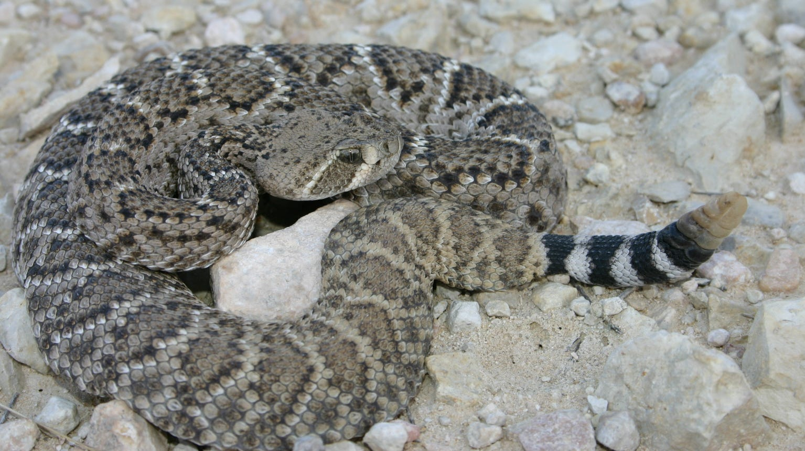

Reptiles are cold-blooded vertebrates that have scales or scutes covering their skin.
They breathe air through lungs and most lay eggs on land, though some give birth to live young.
Reptiles include snakes, lizards, turtles, crocodiles, and alligators. They are ectothermic,
meaning they rely on external heat sources to regulate their body temperature. Reptiles have
adapted to live in various environments including deserts, forests, oceans, and freshwater
habitats. Many reptiles are excellent predators with specialized hunting techniques.
Reptiles represent one of the most ancient and successful vertebrate groups on Earth, with a fossil record dating back over 300 million years. This class includes approximately 10,000 known species divided into four major groups: lizards and snakes (Squamata), turtles and tortoises (Testudines), crocodilians (Crocodilia), and the tuatara (Rhynchocephalia).
The key adaptations that allowed reptiles to colonize terrestrial environments include waterproof skin covered in scales or scutes, efficient kidneys that conserve water, and the amniotic egg with a protective shell. Unlike amphibians, reptiles are not dependent on water for reproduction, allowing them to thrive in arid environments.
Reptilian diversity is remarkable - from the smallest gecko measuring just 16mm to massive saltwater crocodiles exceeding 6 meters in length. Their feeding strategies range from herbivorous iguanas and tortoises to apex predators like Komodo dragons and venomous snakes with sophisticated venom delivery systems.
Ecologically, reptiles serve crucial roles as both predators and prey. Many species are important pest controllers, with some snakes and lizards consuming large quantities of rodents and insects. Others, like marine iguanas and some tortoises, are primary herbivores that shape plant communities through their grazing patterns.
Modern reptiles face significant conservation challenges, with habitat destruction, climate change, and human persecution threatening many species. However, their remarkable adaptability and efficient metabolism continue to make them successful in environments where other vertebrates struggle to survive.
ü¶é Lizards
Lizards are a diverse group of reptiles found on every continent except Antarctica. They range in size from tiny geckos to large monitors and display a wide variety of colors, shapes, and behaviors. Most lizards have four legs, external ear openings, and movable eyelids. They are primarily carnivorous or insectivorous, though some species eat plants. Lizards are known for their ability to shed their tails to escape predators and for their adaptability to many habitats.
Lizards belong to the order Squamata, which they share with snakes, making them one of the most successful reptile groups on Earth. With over 6,000 known species, lizards exhibit remarkable diversity in size, habitat, and behavior. The smallest lizard, the dwarf gecko, measures just 16mm in length, while the largest, the Komodo dragon, can reach over 3 meters and weigh up to 70kg.
Lizards have evolved numerous fascinating adaptations for survival. Many species can change color for camouflage, communication, or temperature regulation. Some, like chameleons, have independently moving eyes and projectile tongues that can extend twice their body length. Geckos have specialized toe pads with millions of tiny hairs called setae that allow them to walk on any surface, including glass.
Most lizards are ectothermic, relying on external heat sources to regulate body temperature through behavioral thermoregulation - basking in the sun to warm up and seeking shade to cool down. This energy-efficient strategy allows them to survive in harsh environments where mammals might struggle.
Reproduction varies greatly among lizard species. While most lay eggs (oviparous), some give birth to live young (viviparous), and others retain eggs until hatching (ovoviviparous). Some species, like certain whiptail lizards, can reproduce through parthenogenesis, creating genetic clones without mating.
Ecologically, lizards serve crucial roles as both predators and prey. They help control insect populations, disperse seeds, and provide food for birds, mammals, and other reptiles. Many species are excellent indicators of ecosystem health due to their sensitivity to environmental changes.
Iguana
Scientific Name: Iguana iguana
Reproduction Type :Oviparous
Iguanas are large, herbivorous lizards that are native to Central and South America, as well as the Caribbean.
They are known for their distinctive appearance, with a long tail, spiny crest along their back, and a dewlap (a flap of skin under the chin).
Iguanas are primarily arboreal, meaning they spend most of their time in trees, but they can also be found on the ground.
They are social animals that often live in groups and communicate through body language and vocalizations.
Species of Iguana
There are several species of iguanas, including:
1.Green Iguana – the most common and widely recognized species
2. Lesser Antillean Iguana (Iguana delicatissima)
3. Galápagos Land Iguana (Conolophus subcristatus)
4. Marine Iguana (Amblyrhynchus cristatus)
5. Black Spiny-tailed Iguana (Ctenosaura pectinata)
The Green Iguana is the most well-known and commonly kept as a pet.
Habitat
Iguanas inhabit a variety of environments, including:
Tropical rainforests
Dry forests
Coastal areas
They prefer areas with plenty of vegetation for food and shelter, as well as access to water sources. Iguanas are excellent climbers and often seek refuge in trees to escape predators.
Physical Characteristics
Iguanas are large lizards that can grow up to 6 feet (1.8 meters) in length, although most species are smaller. They have a long, whip-like tail that can be used for balance and defense. Their skin is covered in scales, which can vary in color from green to brown or gray, depending on the species. Iguanas have sharp claws for climbing and strong jaws with flat teeth adapted for grinding plant material.
Feeding Habits
Iguanas are primarily herbivorous, feeding on a diet of:
Leaves
Flowers
Fruits
They have a specialized digestive system that allows them to break down tough plant material. Some species may also consume small insects or animal matter on occasion, but their diet is predominantly plant-based.
Behavior and Movement
Iguanas are generally diurnal, meaning they are active during the day.
They are known for their slow, deliberate movements and can often be seen basking in the sun to regulate their body temperature.
Iguanas are territorial and may display aggressive behavior towards other iguanas, especially during mating season.
They communicate through body language, such as head bobbing and tail waving, and can also produce hissing sounds when threatened.
Breeding and Parenting
Iguanas are oviparous, meaning they lay eggs rather than giving birth to live young.
During the breeding season, females dig burrows in sandy or soft soil to lay their eggs—usually between 20 and 70, depending on the species.
After laying, the female covers the eggs and leaves; there is no parental care, and the eggs incubate for about 65–90 days, relying on environmental warmth.
Once hatched, baby iguanas are fully independent and must find food and avoid predators on their own.
This lack of parental involvement is similar to many reptiles and some bird species, where young are self-sufficient from birth.
Niche and Ecological Role
Iguanas play an important role in their ecosystems as herbivores and seed dispersers.
By feeding on a variety of plants, they help control vegetation growth and contribute to the cycling of nutrients.
Their droppings often contain seeds, which can germinate and grow into new plants, aiding in forest regeneration.
Iguanas also serve as prey for larger predators, such as birds of prey, snakes, and mammals, making them a vital part of the food web.
Niche Facts and Fascinating Details
Iguanas have a third "parietal" eye on the top of their head, which is sensitive to changes in light and helps them detect predators from above.
They are excellent swimmers and can hold their breath underwater for up to 30 minutes.
Some iguana species can change color to regulate their body temperature or communicate with other iguanas.
In captivity, iguanas can live up to 20 years with proper care.
Their ability to regenerate lost tails is a defense mechanism against predators, allowing them to escape while the predator is distracted by the detached tail.
Chameleon
Scientific Name: Chamaeleonidae
Reproduction Type :Oviparous
Chameleons are a unique group of lizards known for their ability to change color, their long, sticky tongues, and their distinctive eyes that can move independently.
They are primarily found in Madagascar and Africa, but some species inhabit parts of Asia and Europe.
Chameleons are arboreal, meaning they live in trees, and they have specialized feet and prehensile tails that help them navigate their leafy habitats.
Species of Chameleon
There are over 200 species of chameleons, with some of the most well-known including:
1.Panther Chameleon – known for its vibrant colors and patterns
2. Veiled Chameleon (Chamaeleo calyptratus)
3. Jackson's Chameleon (Trioceros jacksonii)
4. Oustalet's Chameleon (Furcifer oustaleti)
5. Pygmy Chameleon (Rhampholeon spp.)
The Panther Chameleon is one of the most popular species kept as a pet due to its striking appearance.
Habitat
Chameleons inhabit a variety of environments, including:
Tropical rainforests
Dry savannas
Scrublands
They prefer areas with plenty of vegetation for camouflage and hunting. Chameleons are primarily arboreal, spending most of their time in trees and shrubs.
Physical Characteristics
Chameleons are known for their distinctive features, including:
Long, prehensile tails that help them balance and grip branches
Zygodactylous feet with two toes pointing forward and two backward, allowing them to grasp branches securely
Independent eye movement, enabling them to look in different directions simultaneously
A long, sticky tongue that can extend up to twice their body length to catch prey
Their skin contains specialized cells called chromatophores that allow them to change color for communication and camouflage.
Feeding Habits
Chameleons are primarily insectivorous, feeding on a diet of:
Insects (crickets, locusts, flies)
Small invertebrates
Some larger species may also consume small vertebrates like lizards or birds.
They use their long tongues to catch prey with remarkable speed and accuracy. Chameleons have excellent vision, allowing them to spot prey from a distance.
Behavior and Movement
Chameleons are generally solitary and territorial animals. They are known for their slow, deliberate movements, which help them avoid detection by predators.
Their ability to change color is not only for camouflage but also for communication, temperature regulation, and expressing mood.
Chameleons can move their eyes independently, allowing them to scan their surroundings for threats while keeping their body still.
Breeding and Parenting
Chameleons are oviparous, meaning they lay eggs rather than giving birth to live young.
During the breeding season, female chameleons dig holes in the soil to lay their eggs—typically between 10 and 40, depending on the species.
After laying, the female covers the eggs and leaves; there is no parental care.
The eggs incubate for 4–12 months, depending on the species and environmental conditions.
Once hatched, baby chameleons are fully independent and must find food and avoid predators on their own.
This lack of parental involvement is common among reptiles, where young are self-sufficient from birth.
Niche and Ecological Role
Chameleons play a unique role in their ecosystems as both predators and prey.
By feeding on insects and small invertebrates, they help control pest populations and maintain ecological balance.
Their presence supports biodiversity, and they serve as food for birds, snakes, and mammals.
Chameleons also contribute to the pollination of some plants when they feed on nectar or insects found on flowers.
Niche Facts and Fascinating Details
Chameleons are famous for their color-changing ability, which is used for communication, camouflage, and temperature regulation.
Their eyes can rotate and focus independently, giving them a 360-degree field of vision.
Some species can project their tongues at speeds up to 13 miles per hour to catch prey.
Chameleons are sensitive to environmental changes and habitat loss, making them vulnerable to extinction in some regions.
In captivity, chameleons require specialized care, including controlled humidity, temperature, and UV lighting to thrive.
Gecko
Scientific Name: Gekkonidae
Reproduction Type :Oviparous
Geckos are small to medium-sized lizards known for their distinctive vocalizations, adhesive toe pads, and ability to climb smooth surfaces.
They are found in warm climates around the world, including Africa, Asia, Australia, and the Americas.
Geckos are primarily nocturnal, meaning they are active at night, and they have excellent night vision.
Species of Gecko
There are over 1,500 species of geckos, with some of the most well-known including:
1.Leopard Gecko – a popular pet known for its spotted appearance
2. Crested Gecko (Correlophus ciliatus)
3. Tokay Gecko (Gekko gecko)
4. House Gecko (Hemidactylus spp.)
5. Flying Gecko (Ptychozoon kuhli)
The Leopard Gecko is one of the most commonly kept gecko species in captivity.
Habitat
Geckos inhabit a variety of environments, including:
Tropical rainforests
Deserts
Urban areas
They are adaptable creatures that can thrive in both natural and human-made habitats. Geckos are primarily terrestrial but some species are arboreal, spending time in trees and shrubs.
Physical Characteristics
Geckos are small to medium-sized lizards with a wide range of colors and patterns.
They have soft, scaly skin that can vary in texture and color depending on the species.
Geckos are known for their unique toe pads, which allow them to climb smooth surfaces and even walk on ceilings.
Their eyes are large and often lack eyelids, so they use a protective membrane to keep their eyes moist.
Feeding Habits
Geckos are primarily insectivorous, feeding on a diet of:
Insects (crickets, moths, beetles)
Small invertebrates
Some larger species may also consume small vertebrates like lizards or frogs.
Geckos have a unique feeding mechanism, using their long, sticky tongues to catch prey quickly and efficiently.
Behavior and Movement
Geckos are generally nocturnal, meaning they are most active at night.
They are known for their distinctive vocalizations, which can include chirps, clicks, and barks.
Geckos have excellent climbing abilities due to their specialized toe pads, allowing them to navigate vertical surfaces with ease.
They are also capable of dropping their tails as a defense mechanism, allowing them to escape predators while the detached tail distracts the threat.
Breeding and Parenting
Geckos are oviparous, meaning they lay eggs rather than giving birth to live young.
During the breeding season, female geckos lay eggs in hidden, protected locations such as under rocks, logs, or within crevices..
Most gecko species lay one or two eggs per clutch, and may produce several clutches during a breeding season. The eggs are typically soft-shelled when laid but harden soon after exposure to air..
Geckos do not provide parental care; after laying, the eggs are left to incubate on their own. Incubation periods vary by species and environmental conditions, usually lasting from several weeks to a few months..
Hatchlings are independent from birth and must find food and shelter immediately.
Niche and Ecological Role
Geckos play an important role in their ecosystems as insect predators, helping to control populations of pests such as mosquitoes, flies, and beetles. .
Their presence supports biodiversity and contributes to the balance of food webs in both natural and urban environments..
Geckos also serve as prey for larger animals, including birds, snakes, and mammals.
Niche Facts and Fascinating Details
Geckos are famous for their ability to climb smooth surfaces, thanks to microscopic hair-like structures called setae on their toe pads..
Some gecko species can vocalize to communicate with others, especially during mating or territorial disputes..
Geckos are capable of regenerating lost tails, which is a defense mechanism against predators..
In some cultures, geckos are considered symbols of good luck and are welcomed in homes for their pest-control abilities.
Skink
Scientific Name: Scincidae
Reproduction Type :Oviparous
Skinks are a diverse family of lizards known for their elongated bodies, smooth scales, and reduced
They are found in a wide range of habitats across the world, including forests, grasslands, deserts, and urban areas.
Skinks are primarily terrestrial but some species are arboreal or burrowing.
Species of Skink
There are over 1,500 species of skinks, with some of the most well-known including:
1.Blue-tongued Skink – known for its distinctive blue tongue
2. Common Skink (Lacerta vivipara)
3. Five-lined Skink (Plestiodon fasciatus)
4. Solomon Island Skink (Corucia zebrata)
5. Sandfish Skink (Scincus scincus)
The Blue-tongued Skink is one of the most popular skink species kept as a pet due to its docile nature and unique appearance.
Habitat
Skinks inhabit a variety of environments, including:
Forests
Grasslands
Deserts
Urban areas
They are adaptable creatures that can thrive in both natural and human-made habitats. Skinks are primarily terrestrial but some species are arboreal or burrowing.
Physical Characteristics
Skinks are characterized by their elongated bodies, smooth scales, and reduced or absent limbs.
They have small, bead-like scales that give them a shiny appearance.
Skinks
Their coloration can range from brown and gray to vibrant blues, greens, and reds, depending on the species.
Feeding Habits
Skinks are primarily insectivorous, feeding on a diet of:
Insects (crickets, beetles, ants)
Small invertebrates
Some larger species may also consume small vertebrates like lizards or rodents.
Skinks have strong jaws and sharp teeth that allow them to crush hard-shelled prey.
Behavior and Movement
Skinks are generally diurnal, meaning they are most active during the day.
They are known for their quick movements and agility, allowing them to escape predators quickly.
Skinks can be found basking in the sun to regulate their body temperature, and they often hide under rocks, logs, or leaf litter when threatened.
Some skink species can shed their tails as a defense mechanism, allowing them to escape while the detached tail distracts the threat.
Breeding and Parenting
Skinks are oviparous, meaning they lay eggs rather than giving birth to live young.
During the breeding season, female skinks lay eggs in concealed locations such as under rocks, logs, or within burrows.
Most skink species lay between 2 and 20 eggs per clutch, depending on the species and environmental conditions.
Some skinks are ovoviviparous, meaning they give birth to live young rather than laying eggs.
After laying, there is typically no parental care; the eggs are left to incubate on their own, relying on environmental warmth.
Incubation periods vary by species, usually lasting from several weeks to a few months.
Hatchlings are independent from birth and must find food and shelter immediately.
Niche and Ecological Role
Skinks play an important role in their ecosystems as both predators and prey.
By feeding on insects and small invertebrates, they help control pest populations and maintain ecological balance.
Skinks also serve as food for birds, snakes, and mammals, contributing to the food web.
Some skink species aid in seed dispersal by consuming fruits and excreting seeds in new locations.
Niche Facts and Fascinating Details
Skinks are known for their ability to shed their tails as a defense mechanism, which can distract predators and allow escape.
Their smooth, shiny scales help reduce water loss and protect them from rough terrain.
Some skink species can regenerate lost tails, though the new tail may differ in color and texture.
Skinks are highly adaptable and can thrive in urban environments, often found in gardens and parks.
In some cultures, skinks are considered symbols of good luck or are featured in folklore.
Tegu
Scientific Name: Salvator spp.
Reproduction Type :Oviparous
Tegus are large, robust lizards native to Central and South America.
They are known for their intelligence, strong jaws, and distinctive coloration.
Tegus are primarily terrestrial but can also climb trees and swim.
Species of Tegu
There are several species of tegus, with some of the most well-known including:
1.Argentine Tegu – the most common species kept as a pet
2. Colombian Tegu (Salvator rufescens)
3. Black and White Tegu (Salvator teguixin)
4. Red Tegu (Salvator rufescens)
5. Gold Tegu (Salvator auratus)
The Argentine Tegu is one of the most popular species kept as a pet due to its docile nature and striking appearance.
Habitat
Tegus inhabit a variety of environments, including:
Tropical rainforests
Savannas
Grasslands
They are adaptable creatures that can thrive in both natural and human-made habitats. Tegus are primarily terrestrial but can also climb trees and swim.
Physical Characteristics
Tegus are large lizards that can grow up to 4 feet (1.2 meters) in length.
They have robust bodies, strong jaws, and powerful limbs.
Tegus are known for their distinctive coloration, which can vary from black and white to red or gold, depending on the species.
Their skin is covered in smooth scales, and they have a long, muscular tail that aids in balance and defense.
Feeding Habits
Tegus are omnivorous, feeding on a diet of:
Insects
Small mammals
Fruits and vegetables
They have strong jaws and sharp teeth that allow them to crush hard-shelled prey.
Tegus are known for their scavenging behavior, often consuming carrion when available.
Behavior and Movement
Tegus are generally diurnal, meaning they are most active during the day.
They are known for their intelligence and problem-solving abilities, often exhibiting complex behaviors.
Tegus can be territorial and may display aggressive behavior towards other tegus, especially during mating season.
They are capable swimmers and can hold their breath underwater for extended periods.
Breeding and Parenting
Tegus are oviparous, meaning they lay eggs rather than giving birth to live young.
During the breeding season, female tegus lay clutches of 12–35 eggs in burrows or hidden locations, often in decaying vegetation for warmth..
After laying, there is no parental care; the eggs incubate for 60–90 days, relying on environmental heat..
Hatchlings are independent from birth and must find food and shelter on their own.
Niche and Ecological Role
Tegus play an important role in their ecosystems as both predators and scavengers..
By feeding on a wide range of foods, they help control insect and small animal populations and aid in seed dispersal..
Tegus also serve as prey for larger predators, contributing to the food web.
Niche Facts and Fascinating Details
Tegus are known for their intelligence and can be trained to recognize their owners in captivity. .
They are capable of seasonal dormancy (brumation) during cooler months..
Tegus can regenerate lost tails, and some species exhibit parental guarding of nests before egg laying..
Their strong jaws allow them to eat hard-shelled prey, and they are sometimes kept as pets due to their docile nature.
Whiptail
Scientific Name: Cnemidophorus spp.
Reproduction Type :Oviparous
Whiptails are a group of lizards known for their long, slender bodies, whip-like tails, and unique reproductive strategies.
They are primarily found in the Americas, particularly in arid and semi-arid regions.
Whiptails are known for their speed and agility, making them effective hunters.
Species of Whiptail
There are several species of whiptails, with some of the most well-known including:
1.Western Whiptail – known for its distinctive stripes
2. Eastern Whiptail (Aspidoscelis sexlineatus)
3. Texas Spotted Whiptail (Aspidoscelis gularis)
4. Little Striped Whiptail (Aspidoscelis inornatus)
5. Checkered Whiptail (Aspidoscelis tesselatus)
The Western Whiptail is one of the most commonly encountered species in North America.
Habitat
Whiptails inhabit a variety of environments, including:
Deserts
Grasslands
Scrublands
They are well-adapted to arid conditions and can often be found in sandy or rocky areas where they can burrow or hide from predators.
Physical Characteristics
Whiptails are characterized by their long, slender bodies and whip-like tails.
They have smooth, shiny scales that can vary in color from brown and gray to vibrant greens and blues, depending on the species.
Whiptails typically have long legs and sharp claws that aid in digging and climbing.
Their eyes are large and well-adapted for detecting movement, allowing them to spot predators and prey quickly.
Feeding Habits
Whiptails are primarily insectivorous, feeding on a diet of:
Insects (crickets, beetles, grasshoppers)
Small invertebrates
Some larger species may also consume small vertebrates like lizards or rodents.
Whiptails are known for their speed and agility, allowing them to catch prey quickly and efficiently.
Behavior and Movement
Whiptails are generally diurnal, meaning they are most active during the day.
They are known for their quick movements and agility, allowing them to escape predators quickly.
Whiptails can be territorial and may display aggressive behavior towards other whiptails, especially during mating season.
They are capable of rapid bursts of speed, which helps them evade threats and catch prey.
Breeding and Parenting
Whiptails are oviparous, meaning they lay eggs rather than giving birth to live young.
During the breeding season, some whiptail species exhibit a fascinating reproductive strategy called parthenogenesis, where females can produce offspring without fertilization by a male..
This is especially common in certain all-female populations, resulting in genetically identical young.. Most whiptails lay eggs in concealed locations such as under rocks or within burrows..
Clutch sizes vary by species, typically ranging from 1 to 10 eggs. After laying, there is no parental care; the eggs incubate for several weeks to a few months, relying on environmental warmth..
Hatchlings are independent from birth and must find food and shelter immediately.
Niche and Ecological Role
Whiptails play an important role in their ecosystems as insect predators, helping to control populations of ants, beetles, and other small invertebrates.
Their presence supports biodiversity and contributes to the balance of food webs in arid and semi-arid environments.
Whiptails also serve as prey for birds, snakes, and mammals, making them a vital link in the food chain.
Niche Facts and Fascinating Details
Parthenogenesis in whiptails is one of the most remarkable examples of asexual reproduction among vertebrates.
Some whiptail species can regenerate lost tails, which helps them escape predators.
Whiptails are highly active and can be seen darting quickly across open ground in search of food.
Their long tails not only aid in balance and movement but can also be used as a defense mechanism.
In some regions, whiptails are considered indicators of healthy ecosystems due to their sensitivity to environmental changes.
Monitor Lizards
Scientific Name: Varanus spp.
Monitor lizards are large, carnivorous reptiles found in Africa, Asia, and Australia. They have long bodies, powerful limbs, and a keen sense of smell.
Species of Monitor Lizards
There are over 70 species of monitor lizards, with some of the
most well-known including:
1.Komodo Dragon – the largest living lizard species
2. Nile Monitor (Varanus niloticus)
3. Asian Water Monitor (Varanus salvator)
4. Savannah Monitor (Varanus exanthematicus)
5. Mangrove Monitor (Varanus indicus)
The Komodo Dragon is one of the most famous monitor lizards, known for its size and predatory behavior.
Habitat
Monitor lizards inhabit a variety of environments, including:
Tropical rainforests
Savannas
Deserts
Coastal areas
They are adaptable creatures that can thrive in both natural and human-made habitats. Monitor lizards are primarily terrestrial but some species are arboreal or semi-aquatic.
Physical Characteristics
Monitor lizards are characterized by their long, muscular bodies, powerful limbs, and sharp claws.
They have smooth, scaly skin that can vary in color from brown and gray to vibrant greens and yellows, depending on the species.
Monitor lizards have elongated heads with sharp teeth and a keen sense of smell, which they use to locate prey.
Their tails are long and muscular, aiding in balance and defense.
Feeding Habits
Monitor lizards are carnivorous, feeding on a diet of:
Small mammals
Birds
Reptiles
Insects
Some larger species may also consume carrion.
Monitor lizards are known for their powerful jaws and sharp teeth, which allow them to crush hard-shelled prey.
Behavior and Movement
Monitor lizards are generally diurnal, meaning they are most active during the day.
They are known for their intelligence and problem-solving abilities, often exhibiting complex behaviors.
Monitor lizards can be territorial and may display aggressive behavior towards other monitors, especially during mating season.
They are capable swimmers and can hold their breath underwater for extended periods.
Breeding and Parenting
Monitor lizards are oviparous, meaning they lay eggs rather than giving birth to live young.
During the breeding season, females will lay clutches of eggs in burrows or hidden locations.
The eggs are left to incubate and hatch on their own, with no parental care provided after laying.
Incubation periods vary by species, usually lasting from several weeks to a few months.
Hatchlings are independent from birth and must find food and shelter immediately.
Niche and Ecological Role
Monitor lizards play an important role in their ecosystems as apex predators, helping to control populations of small mammals, birds, and reptiles.
Their presence supports biodiversity and contributes to the balance of food webs in their habitats.
Monitor lizards also serve as prey for larger predators, including birds of prey and large snakes.
Niche Facts and Fascinating Details
Monitor lizards are known for their intelligence and can be trained to recognize their owners in captivity.
They have a keen sense of smell, which they use to locate prey and navigate their environment.
Some monitor lizards, like the Komodo Dragon, have venomous saliva that helps subdue prey.
Monitor lizards are highly adaptable and can thrive in a wide range of habitats, from deserts to rainforests.
In some cultures, monitor lizards are considered symbols of strength and resilience.
Gila Monster
Scientific Name: Heloderma suspectum
Reproduction Type :Oviparous
The Gila monster is a venomous lizard native to the southwestern United States and northwestern Mexico. It is known for its distinctive coloration, slow movement, and powerful bite.
Species of Gila Monster
There is only one species of Gila monster, Heloderma suspectum, which has two recognized subspecies:
1.Common Gila Monster – found in Arizona and New Mexico
2. Mexican Gila Monster (Heloderma suspectum cinctum)
The Common Gila Monster is the most well-known and studied subspecies
Habitat
Gila monsters inhabit a variety of environments, including:
Deserts
Scrublands
Rocky hillsides
They are primarily found in the southwestern United States and northwestern Mexico, where they prefer arid and semi-arid habitats.
Physical Characteristics
Gila monsters are stocky lizards with a robust build. They have a broad head, short legs, and a thick tail. Their skin is covered in bead-like scales, and they exhibit a striking coloration of black and orange or yellow patterns, which serves as warning coloration to potential predators.
Feeding Habits
Gila monsters are carnivorous, feeding primarily on small mammals, birds, and eggs.
They have a slow metabolism and can go for long periods without food, often consuming large meals when available.
Gila monsters use their powerful jaws and venomous saliva to subdue prey, which helps them digest larger meals more efficiently.
Behavior and Movement
Gila monsters are generally nocturnal, meaning they are most active at night.
They are slow-moving lizards, often seen basking in the sun during the day.
Gila monsters are solitary creatures and can be territorial, especially during the breeding season.
They are capable of climbing and burrowing, which helps them find shelter and hunt for prey.
Breeding and Parenting
Gila monsters are oviparous, meaning they lay eggs rather than giving birth to live young.
During the breeding season, males engage in combat to establish dominance and gain access to females. After mating, females lay a clutch of 2 to 12 eggs in a burrow or hidden location. The eggs are leathery and require warm, moist conditions to incubate. Hatchlings emerge after about 2 to 3 months and are independent from birth.
Niche and Ecological Role
Gila monsters play an important role in their ecosystems as both predators and prey.
By feeding on small mammals and birds, they help control populations of these animals and maintain ecological balance.
Gila monsters also serve as prey for larger predators, including birds of prey and large snakes.
Niche Facts and Fascinating Details
Gila monsters are one of the few venomous lizards in the world, with venom that can cause severe pain and swelling in humans.
They have a slow metabolism and can survive on just a few meals per year, allowing them to thrive in harsh desert environments.
Gila monsters are known for their distinctive coloration, which serves as a warning to potential predators about their venomous bite.
In some cultures, Gila monsters are considered symbols of strength and resilience, and they play a role in local folklore.
Komodo Dragon
Scientific Name: Varanus komodoensis
Reproduction Type :Oviparous
The Komodo dragon is the largest living lizard species, native to the Indonesian
islands of Komodo, Rinca, Flores, and Gili Motang. It is known for its size, powerful bite, and predatory behavior.
Species of Komodo Dragon
There is only one species of Komodo dragon, Varanus komodoensis, which has several recognized populations across the Indonesian islands.
The Komodo dragon is the largest and most well-known member of the monitor lizard family.
Habitat
Komodo dragons inhabit tropical savanna and grassland ecosystems, primarily in the islands of Komodo, Rinca, Flores, and Gili Motang. They prefer dry, open areas with plenty of sunlight and access to water sources. These lizards are excellent swimmers and can also be found in coastal regions.
Physical Characteristics
Komodo dragons are massive lizards that can grow up to 10 feet (3 meters) in length and weigh over 300 pounds (136 kg).
They have a robust build, with a broad head, powerful limbs, and a long, muscular tail.
Their skin is covered in tough, scaly armor that provides protection against predators and environmental conditions.
Komodo dragons have sharp claws and serrated teeth that help them tear into prey.
Feeding Habits
Komodo dragons are carnivorous apex predators, feeding on a diet of:
Large mammals (deer, wild boar, water buffalo)
Birds
Smaller reptiles
They are known for their powerful bite and venomous saliva, which contains bacteria that can cause severe infections in prey.
Komodo dragons can consume large meals, often eating up to 80% of their body weight in a single feeding.
Behavior and Movement
Komodo dragons are generally diurnal, meaning they are most active during the day.
They are solitary creatures and can be territorial, especially during the breeding season.
Komodo dragons are capable swimmers and can travel between islands in search of food or mates.
They use their keen sense of smell to locate prey from long distances, often detecting carrion from several miles away.
Breeding and Parenting
Komodo dragons are oviparous, meaning they lay eggs rather than giving birth to live young.
During the breeding season, females lay clutches of 15 to 30 eggs in sandy nests.
The eggs incubate for about 7 to 8 months before hatching, usually during the rainy season.
Hatchlings are independent from birth and must fend for themselves in the wild.
Niche and Ecological Role
Komodo dragons play a crucial role in their ecosystems as apex predators, helping to control populations of large mammals and maintain ecological balance.
Their scavenging behavior also aids in nutrient cycling, as they consume carrion and help decompose dead animals.
Komodo dragons are considered keystone species, meaning their presence has a significant impact on the structure and function of their ecosystems.
Niche Facts and Fascinating Details
Komodo dragons have a unique hunting strategy that involves ambushing their prey and delivering a powerful bite.
Their saliva contains a mix of bacteria and venom, which helps to incapacitate prey and prevent infection.
Komodo dragons are also known for their impressive speed and agility, despite their large size.
Legless lizard
Scientific Name: Anguidae family
Reproduction Type :Oviparous
Legless lizards are a group of reptiles that have evolved to lose their limbs, resembling snakes in appearance. They are found in various habitats around the world and are known for their unique adaptations.
Species of Legless lizard
There are several species of legless lizards, with some of the mostwell-known including:
1.European Legless Lizard – found in Europe and parts of Asia
2. California Legless Lizard (Anniella pulchra)
3. Eastern Glass Lizard (Ophisaurus ventralis)
4. Western Glass Lizard (Ophisaurus attenuatus)
5. Slender Glass Lizard (Ophisaurus compressus)
The European Legless Lizard is one of the most commonly encountered species in Europe.
Habitat
Legless lizards inhabit a variety of environments, including:
Grasslands
Forests
Deserts
They are adaptable creatures that can thrive in both natural and human-made habitats. Legless lizards are primarily terrestrial but some species are burrowing or semi-aquatic.
Physical Characteristics
Legless lizards are characterized by their elongated bodies, smooth scales, and absence of limbs.
They have small, bead-like scales that give them a shiny appearance.
Legless lizards vary in size from small species measuring just a few inches to larger species that can grow up to 3 feet (1 meter) in length.
Their coloration can range from brown and gray to vibrant blues, greens, and reds, depending on the species.
Feeding Habits
Legless lizards are primarily insectivorous, feeding on a diet of:
Insects (crickets, beetles, ants)
Small invertebrates
Some larger species may also consume small vertebrates like lizards or rodents.
Legless lizards have strong jaws and sharp teeth that allow them to crush hard-shelled prey.
Behavior and Movement
Legless lizards are generally diurnal, meaning they are most active during the day.
They are known for their quick movements and agility, allowing them to escape predators quickly.
Legless lizards can be found basking in the sun to regulate their body temperature, and they often hide under rocks, logs, or leaf litter when threatened.
Some legless lizard species can shed their tails as a defense mechanism, allowing them to escape while the detached tail distracts the threat.
Breeding and Parenting
Legless lizards are oviparous, meaning they lay eggs rather than giving birth to live young.
During the breeding season, males engage in courtship displays to attract females. After mating, females lay their eggs in sandy or loose soil, where they incubate until hatching. The young lizards are independent from birth and face many threats from predators and harsh conditions.
Incubation periods vary by species, usually lasting from several weeks to a few months.
Hatchlings are independent from birth and must find food and shelter immediately.
Niche and Ecological Role
Legless lizards play an important role in their ecosystems as both predators and prey. They help control insect populations by feeding on a variety of invertebrates. In turn, they serve as a food source for larger predators, including birds, mammals, and snakes. Their burrowing habits can also contribute to soil aeration and nutrient cycling.
Niche Facts and Fascinating Details
Legless lizards are often mistaken for snakes due to their elongated bodies and lack of limbs, but they are actually more closely related to other lizards.
Some legless lizard species can regenerate lost tails, although the new tail may differ in color and texture.
Their smooth, shiny scales help reduce water loss and protect them from rough terrain.
Legless lizards are highly adaptable and can thrive in urban environments, often found in gardens and parks.
In some cultures, legless lizards are considered symbols of transformation and adaptability.
üêç Snakes
Snakes are elongated, legless reptiles found on every continent except Antarctica. They have flexible bodies covered in scales and move by slithering. Most snakes are carnivorous, feeding on small animals, birds, or eggs. Some species are venomous, using their venom to subdue prey or defend themselves, while others constrict their prey. Snakes play important roles in ecosystems as both predators and prey, and they inhabit a wide range of environments.
Snakes represent one of the most specialized groups of reptiles, having evolved from lizard ancestors around 150 million years ago. With over 3,000 species worldwide, they exhibit remarkable diversity in size, habitat, and hunting strategies. The smallest snake, the thread snake, measures just 10cm in length, while the largest pythons and anacondas can exceed 8 meters.
The evolution of snakes involved the loss of limbs and the development of a highly flexible skull that allows them to swallow prey much larger than their head diameter. Their forked tongues work in conjunction with the Jacobson's organ to "taste" chemical signals in the environment, providing exceptional tracking abilities.
Snake locomotion is achieved through four main methods: lateral undulation (side-to-side movement), rectilinear motion (straight-line movement), concertina locomotion (accordion-like movement), and sidewinding (used in sandy environments). Each method is adapted to different terrains and hunting strategies.
Venomous snakes have evolved sophisticated venom delivery systems with fangs that can be fixed, rear-fanged, or retractable. Snake venoms are complex cocktails of proteins and enzymes that can affect the nervous system, blood clotting, or tissue integrity. Non-venomous species rely on constriction, drowning, or simply overpowering their prey.
Ecologically, snakes are crucial for controlling rodent populations and maintaining ecosystem balance. Many species are ambush predators, while others actively hunt. Their role as both predator and prey makes them keystone species in many environments.
Python
Scientific Name: Pythonidae family
Reproduction Type :Oviparous
Feeding Method: Constriction
Venomous: No
Pythons are large, non-venomous constrictor snakes found in Africa, Asia, and Australia. They are known for their impressive size, powerful bodies, and ability to subdue prey through constriction.
Species of Python
There are several species of pythons, with some of the most well-known including:
1.Burmese Python – one of the largest snake species
2. Reticulated Python (Python reticulatus)
3. Ball Python (Python regius)
4. African Rock Python (Python sebae)
5. Carpet Python (Morelia spilota)
The Burmese Python is one of the most commonly encountered species in captivity.
Habitat
Pythons inhabit a variety of environments, including:
Tropical rainforests
Savannas
Grasslands
They are adaptable creatures that can thrive in both natural and human-made habitats. Pythons are primarily terrestrial but some species are arboreal or semi-aquatic.
Physical Characteristics
Pythons are characterized by their large, muscular bodies and distinctive patterns on their scales.
They have smooth, shiny scales that can vary in color from brown and gray to vibrant greens and yellows, depending on the species.
Pythons typically have elongated heads with sharp teeth and a keen sense of smell, which they use to locate prey.
Their tails are long and muscular, aiding in balance and defense.
Feeding Habits
Pythons are carnivorous constrictor snakes, feeding on a diet of:
Small mammals (rodents, rabbits)
Birds
Reptiles (lizards, smaller snakes)
Pythons use their powerful bodies to constrict prey, wrapping around it and squeezing until
the prey suffocates. They can consume prey larger than their own diameter, thanks to their flexible jaws and expandable bodies.
Behavior and Movement
Pythons are generally nocturnal, meaning they are most active at night.
They are known for their slow, deliberate movements, often remaining motionless for long periods while waiting for prey.
Pythons can be territorial and may display aggressive behavior towards other pythons, especially during mating season.
They are capable swimmers and can hold their breath underwater for extended periods.
Breeding and Parenting
Pythons are oviparous, meaning they lay eggs rather than giving birth to live young.
During the breeding season, female pythons will seek out a suitable mate and engage in courtship behaviors. After mating, the female will lay a clutch of eggs, which she will incubate by coiling around them and using her body heat to keep them warm. Once the eggs hatch, the young pythons are independent and must fend for themselves.
Incubation periods vary by species, usually lasting from several weeks to a few months.
Hatchlings are independent from birth and must find food and shelter immediately.
Niche and Ecological Role
Pythons play an important role in their ecosystems as apex predators, helping to control populations of small mammals, birds, and reptiles.
Their presence supports biodiversity and contributes to the balance of food webs in their habitats.
Pythons also serve as prey for larger predators, including birds of prey and large mammals.
Niche Facts and Fascinating Details
Pythons are known for their impressive size, with some species growing over 20 feet (6 meters) in length.
They have a unique method of locomotion called "rectilinear movement," where they move in a straight line by contracting and expanding their muscles.
Pythons can go for long periods without food, sometimes surviving several months between meals.
In some cultures, pythons are considered symbols of strength and power, and they play a role in local folklore.
Pythons are popular in the exotic pet trade, but they require specialized care and large enclosures to thrive.
Cobra
Scientific Name: Elapidae family
Reproduction Type :Viviparous
Feeding Method: Venomous
Venomous: Yes
Cobras are highly venomous snakes known for their distinctive hoods and ability
to deliver potent venom through their fangs. They are found in Africa, Asia, and parts of the Middle East.
Species of Cobra
There are several species of cobras, with some of the most well-known including:
1.Indian Cobra – one of the most iconic cobra species
2. King Cobra (Ophiophagus hannah)
3. Egyptian Cobra (Naja haje)
4. Black-necked Spitting Cobra (Naja nigricollis)
5. Cape Cobra (Naja nivea)
The Indian Cobra is often associated with snake charmers and is a symbol of danger in many cultures.
Habitat
Cobras inhabit a variety of environments, including:
Forests
Grasslands
Deserts
They are adaptable creatures that can thrive in both natural and human-made habitats. Cobras are primarily terrestrial but some species are arboreal or semi-aquatic.
Physical Characteristics
Cobras are characterized by their elongated bodies, smooth scales, and distinctive hoods.
They have a broad head with large, forward-facing eyes and a pair of fangs that deliver venom.
Cobras can vary in color from brown and gray to vibrant yellows and reds, depending on the species.
Their hoods are formed by elongated ribs that can be expanded when threatened, making them appear larger and more intimidating.
Feeding Habits
Cobras are carnivorous snakes, feeding on a diet of:
Small mammals (rodents, rabbits)
Birds
Reptiles (lizards, smaller snakes)
Cobras use their venom to subdue prey, delivering a potent bite that immobilizes the victim. They can consume prey larger than their own diameter, thanks to their flexible jaws and expandable bodies.
Behavior and Movement
Cobras are generally nocturnal, meaning they are most active at night.
They are known for their defensive behavior, often raising their hoods and hissing when threatened.
Cobras can be territorial and may display aggressive behavior towards other cobras, especially during mating season.
They are capable swimmers and can hold their breath underwater for extended periods.
Breeding and Parenting
Cobras are oviparous, meaning they lay eggs rather than giving birth to live young.
During the breeding season, female cobras will lay a clutch of eggs in a hidden location, such as a burrow or under debris. The number of eggs can vary by species, but it typically ranges from 20 to 50 eggs per clutch. After laying the eggs, the female may stay nearby to protect them from predators. The eggs will incubate for several weeks before hatching, and the young cobras are fully independent from birth.
Incubation periods vary by species, usually lasting from several weeks to a few months.
Hatchlings are independent from birth and must find food and shelter immediately.
Niche and Ecological Role
Cobras play an important role in their ecosystems as apex predators, helping to control populations of small mammals, birds, and reptiles.
Their presence supports biodiversity and contributes to the balance of food webs in their habitats.
Cobras also serve as prey for larger predators, including birds of prey and large mammals.
Niche Facts and Fascinating Details
Cobras have a unique method of locomotion called "sidewinding," which allows them to move quickly across loose sand or uneven terrain.
Some species of cobras are known to exhibit social behavior, such as basking in groups or engaging in courtship displays.
The king cobra is the longest venomous snake in the world, capable of reaching lengths of up to 18 feet (5.5 meters).
Cobras have a specialized forked tongue that helps them detect chemical cues in their environment, enhancing their hunting abilities.
Boa
Scientific Name: Boidae family
Reproduction Type :Viviparous
Feeding Method: Constrictor
Venomous: No
Boas are large, non-venomous constrictor snakes found in the Americas, Africa, and some islands. They are known for their impressive size, powerful bodies, and ability to subdue prey through constriction.
Species of Boa
There are several species of boas, with some of the most well-known including:
1.Common Boa – one of the most iconic boa species
2. Green Tree Boa (Morelia viridis)
3. Rainbow Boa (Epicrates cenchria)
4. Sand Boa (Eryx colubrinus)
5. Hogg Island Boa (Epicrates striatus)
The Common Boa is often associated with snake charmers and is a symbol of danger in many cultures.
Habitat
Boas inhabit a variety of environments, including:
Tropical rainforests
Savannas
Grasslands
They are adaptable creatures that can thrive in both natural and human-made habitats. Boas are primarily terrestrial but some species are arboreal or semi-aquatic.
Physical Characteristics
Boas are characterized by their large, muscular bodies and distinctive patterns on their scales.
They have smooth, shiny scales that can vary in color from brown and gray to vibrant greens and yellows, depending on the species.
Boas typically have elongated heads with sharp teeth and a keen sense of smell, which they use to locate prey.
Their tails are long and muscular, aiding in balance and defense.
Feeding Habits
Boas are carnivorous constrictor snakes, feeding on a diet of:
Small mammals (rodents, rabbits)
Birds
Reptiles (lizards, smaller snakes)
Boas use their powerful bodies to constrict prey, wrapping around it and squeezing until the prey suffocates. They can consume prey larger than their own diameter, thanks to their flexible jaws and expandable bodies.
Behavior and Movement
Boas are generally nocturnal, meaning they are most active at night.
They are known for their slow, deliberate movements, often remaining motionless for long periods while waiting for prey.
Boas can be territorial and may display aggressive behavior towards other boas, especially during mating season.
They are capable swimmers and can hold their breath underwater for extended periods.
Breeding and Parenting
Boas are viviparous, meaning they give birth to live young rather than laying eggs.
During the breeding season, males will compete for access to females, often engaging in elaborate courtship displays. After a gestation period of several months, females give birth to a litter of live young, which are fully formed and independent from birth.
The number of young can vary by species, but it typically ranges from 10 to 60 individuals per litter.
Hatchlings are independent from birth and must find food and shelter immediately.
Niche and Ecological Role
Boas play an important role in their ecosystems as apex predators, helping to control populations of small mammals, birds, and reptiles.
Their presence supports biodiversity and contributes to the balance of food webs in their habitats.
Boas also serve as prey for larger predators, including birds of prey and large mammals.
Niche Facts and Fascinating Details
Boas are known for their impressive size, with some species growing over 10 feet (3 meters) in length.
They have a unique method of locomotion called "rectilinear movement," where they move in a straight line by contracting and expanding their muscles.
Boas can go for long periods without food, sometimes surviving several months between meals.
In some cultures, boas are considered symbols of strength and power, and they play a role in local folklore.
Boas are popular in the exotic pet trade, but they require specialized care and large enclosures to thrive.
Anaconda
Scientific Name: Eunectes family
Reproduction Type :Viviparous
Feeding Method: Constrictor
Venomous: No
Anacondas are large, non-venomous constrictor snakes found in South America. They are known for their impressive size, powerful bodies, and ability to subdue prey through constriction.
Species of Anaconda
There are four recognized species of anacondas, with the most well-known being:
1.Green Anaconda – the largest snake species in the world
2. Yellow Anaconda (Eunectes notaeus)
3. Bolivian Anaconda (Eunectes beniensis)
4. Dark-spotted Anaconda (Eunectes deschauenseei)
The Green Anaconda is often associated with snake charmers and is a symbol of danger in many cultures.
Habitat
Anacondas inhabit a variety of environments, including:
Swamps
Marshes
Rivers
They are adaptable creatures that can thrive in both natural and human-made habitats. Anacondas are primarily aquatic but can also be found on land.
Physical Characteristics
Anacondas are characterized by their large, muscular bodies and distinctive patterns on their scales.
They have smooth, shiny scales that can vary in color from brown and gray to vibrant greens and yellows, depending on the species.
Anacondas typically have elongated heads with sharp teeth and a keen sense of smell, which they use to locate prey.
Their tails are long and muscular, aiding in balance and defense.
Feeding Habits
Anacondas are carnivorous constrictor snakes, feeding on a diet of:
Small mammals (rodents, capybaras)
Birds
Reptiles (lizards, smaller snakes)
Anacondas use their powerful bodies to constrict prey, wrapping around it and squeezing until the prey suffocates. They can consume prey larger than their own diameter, thanks to their flexible jaws and expandable bodies.
Behavior and Movement
Anacondas are primarily solitary creatures, coming together only for mating. They are excellent swimmers, using their powerful bodies to navigate through water with ease. On land, they move in a serpentine fashion, relying on their muscular bodies to propel themselves forward. Anacondas are also known to be ambush predators, lying in wait for unsuspecting prey to come close before striking.
Breeding and Parenting
Anacondas are viviparous, meaning they give birth to live young rather than laying eggs.
During the breeding season, males will compete for access to females, engaging in ritualized displays and combat. After a gestation period of about six months, females give birth to a litter of 20 to 40 live young, which are fully independent at birth.
The young anacondas are born with a length of about 2 feet (0.6 meters) and must fend for themselves immediately after birth.
Hatchlings are independent from birth and must find food and shelter immediately.
Niche and Ecological Role
Anacondas play an important role in their ecosystems as apex predators, helping to control populations of small mammals, birds, and reptiles.
Their presence supports biodiversity and contributes to the balance of food webs in their habitats.
Anacondas also serve as prey for larger predators, including jaguars and caimans.
Niche Facts and Fascinating Details
Anacondas are the largest snakes in the world by weight and the second longest, after the reticulated python.
They have a unique method of hunting, often using their camouflage to blend into their surroundings while waiting for prey.
Anacondas can hold their breath underwater for up to 10 minutes while stalking prey.
Kingsnake
Scientific Name: Lampropeltis family
Reproduction Type :Oviparous
Feeding Method: Constrictor
Venomous: No
Kingsnakes are non-venomous constrictor snakes found in North America. They are known for their striking coloration and patterns, as well as their ability to consume other snakes, including venomous species.
Species of Kingsnake
There are several species of kingsnakes, with some of the most well-known including:
1.California Kingsnake – one of the most popular pet snake species
2. Eastern Kingsnake (Lampropeltis getula)
3. Speckled Kingsnake (Lampropeltis holbrooki)
4. Desert Kingsnake (Lampropeltis splendida)
5. Black Kingsnake (Lampropeltis getula)
The California Kingsnake is often associated with snake charmers and is a symbol of danger in many cultures.
Habitat
Kingsnakes inhabit a variety of environments, including:
Forests
Grasslands
Deserts
They are adaptable creatures that can thrive in both natural and human-made habitats. Kingsnakes are primarily terrestrial but some species are arboreal or semi-aquatic.
Physical Characteristics
Kingsnakes are characterized by their slender bodies, smooth scales, and distinctive patterns.
They have a wide range of colors, including black, brown, yellow, and white, often arranged in bands or stripes.
Kingsnakes typically have elongated heads with small eyes and a keen sense of smell, which they use to locate prey.
Their tails are long and flexible, aiding in balance and defense.
Feeding Habits
Kingsnakes are carnivorous constrictor snakes, feeding on a diet of:
Small mammals (rodents, rabbits)
Birds
Other snakes (including venomous species)
Kingsnakes are known for their ability to consume other snakes, including rattlesnakes and copperheads, making them valuable for controlling snake populations. They use their powerful bodies to constrict prey, wrapping around it and squeezing until the prey suffocates.
Behavior and Movement
Kingsnakes are generally diurnal, meaning they are most active during the day.
They are known for their quick movements and agility, allowing them to escape predators quickly.
Kingsnakes can be territorial and may display aggressive behavior towards other kingsnakes, especially during mating season.
They are capable swimmers and can hold their breath underwater for extended periods.
Breeding and Parenting
Kingsnakes are oviparous, meaning they lay eggs rather than giving birth to live young.
During the breeding season, females lay clutches of 6 to 24 eggs in hidden locations, such as under rocks or in leaf litter. The eggs are leathery and require warm, humid conditions to incubate. After about 60 to 70 days, the eggs hatch, and the young snakes emerge fully formed and ready to fend for themselves.
Incubation periods vary by species, usually lasting from several weeks to a few months.
Hatchlings are independent from birth and must find food and shelter immediately.
Niche and Ecological Role
Kingsnakes play an important role in their ecosystems as both predators and prey.
They help control populations of small mammals, birds, and other snakes, including venomous species.
Their presence supports biodiversity and contributes to the balance of food webs in their habitats.
Kingsnakes also serve as prey for larger predators, including birds of prey and mammals.
Niche Facts and Fascinating Details
Kingsnakes are known for their striking coloration and patterns, which can vary widely between species.
They have a unique method of locomotion called "rectilinear movement," where they move in a straight line by contracting and expanding their muscles.
Kingsnakes can go for long periods without food, sometimes surviving several months between meals.
In some cultures, kingsnakes are considered symbols of protection and good luck, and they play a role in local folklore.
Kingsnakes are popular in the exotic pet trade due to their docile nature and striking appearance.
Milksnake
Scientific Name: Lampropeltis triangulum
Reproduction Type :Oviparous
Feeding Method: Constrictor
Venomous: No
Milksnakes are non-venomous constrictor snakes found in North America. They are known for their striking coloration and patterns, which often mimic those of venomous coral snakes.
Species of Milksnake
There are several subspecies of milksnakes, with some of the most well-known including:
1.Eastern Milksnake – one of the most common milksnake species
2. Western Milksnake (Lampropeltis triangulum gentilis)
3. Mexican Milksnake (Lampropeltis triangulum annulata)
4. Scarlet Kingsnake (Lampropeltis elapsoides)
5. Sinaloan Milksnake (Lampropeltis triangulum sinaloae)
The Eastern Milksnake is often associated with snake charmers and is a symbol of danger in many cultures.
Habitat
Milksnakes inhabit a variety of environments, including:
Forests
Grasslands
Deserts
They are adaptable creatures that can thrive in both natural and human-made habitats. Milksnakes are primarily terrestrial but some species are arboreal or semi-aquatic.
Physical Characteristics
Milksnakes are characterized by their slender bodies, smooth scales, and distinctive patterns.
They have a wide range of colors, including black, brown, yellow, and red, often arranged in bands or stripes that mimic those of venomous coral snakes.
Milksnakes typically have elongated heads with small eyes and a keen sense of smell, which they use to locate prey.
Their tails are long and flexible, aiding in balance and defense.
Feeding Habits
Milksnakes are carnivorous and primarily feed on small mammals, birds, and reptiles. They are non-venomous constrictors, meaning they subdue their prey by wrapping around it and suffocating it before consumption. Milksnakes are known for their ability to mimic the coloration of venomous snakes, which may help them avoid predation.
Behavior and Movement
Milksnakes are generally nocturnal, meaning they are most active at night.
They are known for their quick movements and agility, allowing them to escape predators quickly.
Milksnakes can be territorial and may display aggressive behavior towards other milksnakes, especially during mating season.
They are capable swimmers and can hold their breath underwater for extended periods.
Breeding and Parenting
Milksnakes are oviparous, meaning they lay eggs rather than giving birth to live young.
During the breeding season, females lay clutches of 3 to 24 eggs in hidden locations, such as under rocks or in leaf litter. The eggs are leathery and require warm, humid conditions to incubate. After about 4 to 8 weeks, the eggs hatch, and the young snakes emerge fully formed and ready to fend for themselves.
Niche and Ecological Role
Milksnakes play an important role in their ecosystems as both predators and prey.
They help control populations of small mammals, birds, and reptiles, contributing to the balance of food webs in their habitats.
Milksnakes also serve as prey for larger predators, including birds of prey and mammals.
Niche Facts and Fascinating Details
Milksnakes are known for their striking coloration and patterns, which can vary widely between subspecies.
They have a unique method of locomotion called "rectilinear movement," where they move in a straight line by contracting and expanding their muscles.
Milksnakes can go for long periods without food, sometimes surviving several months between meals.
In some cultures, milksnakes are considered symbols of protection and good luck, and they play a role in local folklore.
Milksnakes are popular in the exotic pet trade due to their docile nature and striking appearance.
Garter Snake
Scientific Name: Thamnophis family
Reproduction Type :Viviparous
Feeding Method: Non-venomous
Venomous: No
Garter snakes are small to medium-sized non-venomous snakes found throughout North America. They are known for their distinctive stripes and patterns, as well as their adaptability to various habitats.
Species of Garter Snake
There are several species of garter snakes, with some of the most well-known including:
1.Common Garter Snake – one of the most widespread species
2. Western Terrestrial Garter Snake (Thamnophis elegans)
3. Eastern Garter Snake (Thamnophis sirtalis sirtalis)
4. Plains Garter Snake (Thamnophis radix)
5. Checkered Garter Snake (Thamnophis marcianus)
The Common Garter Snake is often associated with snake charmers and is a symbol of danger in many cultures.
Habitat
Garter snakes inhabit a variety of environments, including:
Grasslands
Forests
Wetlands
They are adaptable creatures that can thrive in both natural and human-made habitats. Garter snakes are primarily terrestrial but can also be found near water sources.
Physical Characteristics
Garter snakes are characterized by their slender bodies, smooth scales, and distinctive stripes or patterns.
They typically have a base color of brown, gray, or green, with one or more
longitudinal stripes running down their bodies, which can be yellow, white, or red.
Garter snakes typically have elongated heads with small eyes and a keen sense of smell, which
they use to locate prey.
Their tails are long and flexible, aiding in balance and defense.
Feeding Habits
Garter snakes are carnivorous and primarily feed on a diet of:
Small invertebrates (earthworms, slugs)
Amphibians (frogs, toads)
Fish
Garter snakes are non-venomous and use their sharp teeth to grasp prey before swallowing it whole. They are known for their ability to consume prey larger than their own diameter, thanks to their flexible jaws and expandable bodies.
Behavior and Movement
Garter snakes are generally diurnal, meaning they are most active during the day.
They are known for their quick movements and agility, allowing them to escape predators quickly.
Garter snakes can be territorial and may display aggressive behavior towards other garter snakes, especially during mating season.
They are capable swimmers and can hold their breath underwater for extended periods.
Breeding and Parenting
Garter snakes are viviparous, meaning they give birth to live young rather than laying eggs.
During the breeding season, males will engage in courtship displays to attract females. After mating, females will give birth to a litter of 10 to 40 live young, depending on the species and environmental conditions. The young are fully formed and independent at birth, receiving no parental care.
The number of young can vary by species, but it typically ranges from 10 to 40 individuals per litter.
Hatchlings are independent from birth and must find food and shelter immediately.
Niche and Ecological Role
Garter snakes play an important role in their ecosystems as both predators and prey.
They help control populations of small invertebrates, amphibians, and fish, contributing to the balance of food webs in their habitats.
Garter snakes also serve as prey for larger predators, including birds of prey and mammals.
Niche Facts and Fascinating Details
Garter snakes are known for their striking coloration and patterns, which can vary widely between species.
They have a unique method of locomotion called "rectilinear movement," where they move in a straight line by contracting and expanding their muscles.
Garter snakes can go for long periods without food, sometimes surviving several months between meals.
In some cultures, garter snakes are considered symbols of protection and good luck, and they play a role in local folklore.
Garter snakes are popular in the exotic pet trade due to their docile nature and striking appearance.
Viper
Scientific Name: Viperidae family
Reproduction Type: Oviparous or Viviparous
Feeding Method: Venomous
Venomous: Yes
Vipers are a diverse group of venomous snakes known for their distinctive triangular heads and long, hinged fangs. They are found in various habitats around the world and are known for their potent venom, which they use to subdue prey.
Species of Viper
There are several species of vipers, with some of the most well-known including:
1.Eastern Diamondback Rattlesnake – one of the largest venomous snakes in North America
2. Gaboon Viper (Bitis gabonica)
3. Puff Adder (Bitis arietans)
4. Copperhead (Agkistrodon contortrix)
5. European Adder (Vipera berus)
The Eastern Diamondback Rattlesnake is often associated with snake charmers and is a symbol of danger in many cultures.
Habitat
Vipers inhabit a variety of environments, including:
Forests
Grasslands
Deserts
They are adaptable creatures that can thrive in both natural and human-made habitats. Vipers are primarily terrestrial but some species are arboreal or semi-aquatic.
Physical Characteristics
Vipers are characterized by their stout bodies, triangular heads, and long, hinged fangs.
They have rough, keeled scales that can vary in color from brown and gray to vibrant greens and yellows, depending on the species.
Vipers typically have elongated heads with slit-like pupils and a keen sense of smell, which they use to locate prey.
Their tails are short and thick, aiding in balance and defense.
Feeding Habits
Vipers are carnivorous and primarily feed on a diet of:
Small mammals (rodents, rabbits)
Birds
Reptiles (lizards, smaller snakes)
Vipers are ambush predators that use their venom to subdue prey. They strike quickly, injecting venom through their long fangs, which immobilizes the prey before consumption.
Behavior and Movement
Vipers are generally nocturnal, meaning they are most active at night.
They are known for their stealthy movements, often remaining motionless for long periods while waiting for prey.
Vipers can be territorial and may display aggressive behavior towards other vipers, especially during mating season.
They are capable swimmers and can hold their breath underwater for extended periods.
Breeding and Parenting
Vipers can be either oviparous (laying eggs) or viviparous (giving birth to live young), depending on the species.
During the breeding season, males will engage in combat to establish dominance and gain access to females. After mating, females will seek out a suitable location to lay their eggs or give birth to live young, depending on their reproductive strategy.
Niche and Ecological Role
Vipers play an important role in their ecosystems as apex predators, helping to control populations of small mammals, birds, and reptiles.
Their presence supports biodiversity and contributes to the balance of food webs in their habitats.
Vipers also serve as prey for larger predators, including birds of prey and mammals.
Niche Facts and Fascinating Details
Vipers are known for their impressive size, with some species growing over 10 feet (3 meters) in length.
They have a unique method of hunting, often using their camouflage to blend into their surroundings while waiting for prey.
Vipers can go for long periods without food, sometimes surviving several months between meals.
In some cultures, vipers are considered symbols of danger and power, and they play a role in local folklore.
Vipers are popular in the exotic pet trade, but they require specialized care and large enclosures to thrive.
Mamba
Scientific Name: Dendroaspis family
Reproduction Type: Oviparous
Feeding Method: Venomous
Venomous: Yes
Mambas are a group of highly venomous snakes found in Africa. They are known for their speed, agility, and potent venom, making them one of the most dangerous snakes in the world.
Species of Mamba
There are four recognized species of mambas, with the most well-known being:
1.Black Mamba – the fastest and most venomous snake in Africa
2. Green Mamba (Dendroaspis angusticeps)
3. Jameson's Mamba (Dendroaspis jamesoni)
4. Eastern Green Mamba (Dendroaspis viridis)
The Black Mamba is often associated with snake charmers and is a symbol of danger in many cultures.
Habitat
Mambas inhabit a variety of environments, including:
Forests
Savannas
Scrublands
They are adaptable creatures that can thrive in both natural and human-made habitats. Mambas are primarily terrestrial but can also be found in trees.
Physical Characteristics
Mambas are characterized by their slender bodies, smooth scales, and distinctive coloration.
They have a range of colors, including black, green, and yellow, depending on the species.
Mambas typically have elongated heads with large eyes and a keen sense of smell, which they use to locate prey.
Their tails are long and flexible, aiding in balance and defense.
Feeding Habits
Mambas are carnivorous and primarily feed on a diet of:
Small mammals (rodents, birds)
Other reptiles
Mambas are highly venomous and use their potent venom to subdue prey. They strike quickly, injecting venom through their long fangs, which immobilizes the prey before consumption.
Behavior and Movement
Mambas are known for their agility and speed. They are primarily arboreal, spending much of their time in trees, but they are also excellent swimmers. Mambas are diurnal, meaning they are active during the day. They use their keen eyesight and sense of smell to locate prey and avoid predators.
Breeding and Parenting
Mambas are oviparous, meaning they lay eggs rather than giving birth to live young.
During the breeding season, female mambas will lay a clutch of eggs in a hidden location, such as a burrow or under a pile of leaves. The eggs are left to incubate on their own, and the young mambas emerge fully formed and ready to fend for themselves.
Niche and Ecological Role
Mambas play an important role in their ecosystems as apex predators, helping to control populations of small mammals and other reptiles.
Their presence supports biodiversity and contributes to the balance of food webs in their habitats.
Mambas also serve as prey for larger predators, including birds of prey and mammals.
Niche Facts and Fascinating Details
Mambas are among the fastest snakes in the world, capable of reaching speeds of up to 12 miles per hour (19 km/h).
They have a unique method of hunting, often using their speed and agility to chase down prey.
Mambas can go for long periods without food, sometimes surviving several weeks between meals.
In some cultures, mambas are considered symbols of danger and power, and they play a role in local folklore.
Mambas are popular in the exotic pet trade, but they require specialized care and large enclosures to thrive.
Krait
Scientific Name: Bungarus family
Reproduction Type: Oviparous
Feeding Method: Venomous
Venomous: Yes
Kraits are highly venomous snakes found in South and Southeast Asia. They are known for their distinctive banded patterns and potent neurotoxic venom, which can be fatal to humans if untreated.
Species of Krait
There are several species of kraits, with some of the most well-known including:
1.Common Krait – widespread in the Indian subcontinent
2. Banded Krait (Bungarus fasciatus)
3. Red-headed Krait (Bungarus flaviceps)
4. Many-banded Krait (Bungarus multicinctus)
The Common Krait is responsible for many snakebite incidents in its range.
Habitat
Kraits inhabit a variety of environments, including:
Grasslands
Forests
Agricultural fields
They are often found near human settlements and are primarily nocturnal, hiding under debris or in burrows during the day.
Physical Characteristics
Kraits are slender snakes with smooth, glossy scales and distinctive banded patterns, usually in black and white or yellow.
They have a small, narrow head and a short tail.
Kraits can grow up to 6 feet (1.8 meters) in length, depending on the species.
Feeding Habits
Kraits are carnivorous and primarily feed on:
Other snakes (including venomous species)
Small mammals
Lizards
Kraits are known for their ophiophagy (snake-eating) behavior and use their potent venom to quickly immobilize prey.
Behavior and Movement
Kraits are nocturnal and generally shy, avoiding confrontation with humans.
They are slow-moving during the day but become active and agile at night.
When threatened, kraits may coil and hide their heads under their bodies rather than striking.
Breeding and Parenting
Kraits are oviparous, laying clutches of 6 to 15 eggs in concealed locations.
Females may guard the eggs until they hatch, but there is no parental care after hatching.
Hatchlings are independent from birth and must find food and shelter immediately.
Niche and Ecological Role
Kraits help control populations of other snakes and small vertebrates, maintaining ecological balance.
They are preyed upon by larger mammals and birds of prey.
Niche Facts and Fascinating Details
Krait venom is highly neurotoxic and can cause paralysis or death if untreated.
Despite their danger, kraits are generally non-aggressive and bite only when provoked.
Their banded coloration serves as a warning to potential predators.
Kraits are important in medical research for the development of antivenoms.
Green Snake
Scientific Name: Opheodrys family
Reproduction Type: Oviparous
Feeding Method: Non-venomous
Venomous: No
Green snakes are small, non-venomous snakes known for their vibrant green color and slender bodies.
Species of Green Snake
There are several species of green snakes, with some of the most well-known
including:
1.Smooth Green Snake – found in North America
2. Rough Green Snake (Opheodrys aestivus)
3. Eastern Green Snake (Opheodrys aestivus aestivus)
4. Western Green Snake (Opheodrys vernalis vernalis)
The Smooth Green Snake is often associated with snake charmers and is a symbol of nature's beauty in many cultures.
Habitat
Green snakes inhabit a variety of environments, including:
Grasslands
Forests
Shrublands
They are adaptable creatures that can thrive in both natural and human-made habitats. Green snakes are primarily terrestrial but can also be found in trees or shrubs.
Physical Characteristics
Green snakes are characterized by their slender bodies, smooth scales, and vibrant green coloration.
They typically have small heads with large eyes and a keen sense of smell, which they use to locate prey.
Green snakes can grow up to 3 feet (0.9 meters) in length, depending on the species.
Feeding Habits
Green snakes are carnivorous and primarily feed on a diet of:
Small invertebrates (insects, spiders)
Earthworms
Green snakes are non-venomous and use their sharp teeth to grasp prey before swallowing it whole. They are known for their ability to consume prey larger than their own diameter, thanks to their flexible jaws and expandable bodies.
Behavior and Movement
Green snakes are generally diurnal, meaning they are most active during the day.
They are known for their quick movements and agility, allowing them to escape predators quickly.
Green snakes can be territorial and may display aggressive behavior towards other green snakes, especially during mating season.
They are capable climbers and can often be found in trees or shrubs.
Breeding and Parenting
Green snakes are oviparous, meaning they lay eggs rather than giving birth to live young.
During the breeding season, female green snakes will lay a clutch of eggs in a hidden location, such as under leaves or in a burrow. The eggs are soft-shelled and require warm, humid conditions to incubate. After a period of 4 to 8 weeks, the eggs hatch, and the young snakes emerge fully formed and ready to fend for themselves.
Niche and Ecological Role
Green snakes play an important role in their ecosystems as both predators and prey.
They help control populations of small invertebrates, contributing to the balance of food webs in their habitats.
Green snakes also serve as prey for larger predators, including birds of prey and mammals.
Niche Facts and Fascinating Details
Green snakes are known for their striking coloration, which provides excellent camouflage in their natural habitats.
They have a unique method of locomotion called "rectilinear movement," where they move in a straight line by contracting and expanding their muscles.
Green snakes can go for long periods without food, sometimes surviving several weeks between meals.
In some cultures, green snakes are considered symbols of nature's beauty and harmony, and they play a role in local folklore.
Green snakes are popular in the exotic pet trade due to their docile nature and striking appearance.
Blind Snake
Scientific Name: Typhlopidae family
Reproduction Type: Oviparous
Feeding Method: Non-venomous
Venomous: No
Blind snakes are small, burrowing snakes known for their cylindrical bodies and reduced eyesight. They are often mistaken for earthworms due to their size and appearance.
Species of Blind Snake
There are several species of blind snakes, with some of the most well-known including:
1.Common Blind Snake – found in tropical and subtropical regions worldwide
2. Brahminy Blindsnake (Indotyphlops braminus)
3. Thread Snake (Leptotyphlops spp.)
4. Western Blind Snake (Rena humilis)
5. Eastern Blind Snake (Rena dissecta)
The Common Blind Snake is often associated with snake charmers and is a symbol of adaptability in many cultures.
Habitat
Blind snakes inhabit a variety of environments, including:
Forests
Grasslands
Gardens
They are burrowing snakes that spend most of their lives underground, making them difficult to observe in the wild. Blind snakes are primarily terrestrial and prefer loose, sandy soils for burrowing.
Physical Characteristics
Blind snakes are characterized by their small size, cylindrical bodies, and smooth, shiny scales.
They typically have reduced or absent eyes, giving them a blind appearance.
Blind snakes can grow up to 12 inches (30 cm) in length, depending on the species.
Their coloration varies from brown and gray to pink and yellow, providing excellent camouflage in their natural habitats.
Feeding Habits
Blind snakes are carnivorous and primarily feed on a diet of:
Small invertebrates (ants, termites, larvae)
Earthworms
Blind snakes use their sharp teeth to grasp prey before swallowing it whole. They are known for their ability to consume prey larger than their own diameter, thanks to their flexible jaws and expandable bodies.
Behavior and Movement
Blind snakes are generally nocturnal, meaning they are most active at night.
They are burrowing snakes that spend most of their lives underground, using their smooth scales to move through soil and sand.
Blind snakes are shy and non-aggressive, preferring to avoid confrontation with humans and other predators.
They can be territorial and may display aggressive behavior towards other blind snakes, especially during mating season.
Breeding and Parenting
Blind snakes are oviparous, meaning they lay eggs rather than giving birth to live young.
During the breeding season, female blind snakes lay clutches of eggs in underground nests. The eggs are typically small and leathery, providing some protection to the developing embryos. After a gestation period of several weeks, the eggs hatch into small, fully formed blind snakes.
Niche and Ecological Role
Blind snakes play an important role in their ecosystems as both predators and prey.
They help control populations of small invertebrates, contributing to the balance of food webs in their habitats.
Blind snakes also serve as prey for larger predators, including birds of prey and mammals.
Thread Snake
Scientific Name: Leptotyphlopidae family
Reproduction Type: Oviparous
Feeding Method: Non-venomous
Venomous: No
Thread snakes are small, burrowing snakes known for their slender, thread-like bodies. They are often mistaken for earthworms due to their size and appearance.
Species of Thread Snake
There are several species of thread snakes, with some of the most well-known including:
1.Common Thread Snake – found in the Caribbean and parts of South America
2. Western Thread Snake (Leptotyphlops humilis)
3. Eastern Thread Snake (Leptotyphlops dissectus)
4. Brazilian Thread Snake (Leptotyphlops brasiliensis)
The Common Thread Snake is often associated with snake charmers and is a symbol of adaptability in many cultures.
Habitat
Thread snakes inhabit a variety of environments, including:
1. Tropical rainforests
2. Savannas
3. Grasslands
4. Agricultural fields
They prefer loose, sandy soils that allow for easy burrowing and are often found in areas with abundant leaf litter and organic debris.
Physical Characteristics
Thread snakes are characterized by their slender, elongated bodies and smooth scales. They typically range from 10 to 40 centimeters in length, with some species being even smaller. Their coloration is usually a uniform brown or gray, which helps them blend in with their surroundings.
Feeding Habits
Thread snakes are non-venomous and primarily feed on small invertebrates, such as ants and termites. They use their keen sense of smell to locate prey and are known for their burrowing behavior, which allows them to access food sources hidden beneath the soil.
Behavior and Movement
Thread snakes are generally nocturnal, meaning they are most active at night.
They are burrowing snakes that spend most of their lives underground, using their smooth scales to move through soil and sand. Thread snakes are shy and non-aggressive, preferring to avoid confrontation with humans and other predators. They can be territorial and may display aggressive behavior towards other thread snakes, especially during mating season.
Breeding and Parenting
Thread snakes are oviparous, meaning they lay eggs rather than giving birth to live young. During the breeding season, females lay clutches of eggs in sandy or loose soil, where they are left to incubate. The eggs typically hatch after several weeks, and the young snakes are independent from birth, receiving no parental care.
Niche and Ecological Role
Thread snakes play an important role in their ecosystems as both predators and prey. They help control populations of small invertebrates, contributing to the balance of food webs in their habitats. Thread snakes also serve as prey for larger predators, including birds of prey and mammals.
Niche Facts and Fascinating Details
Thread snakes are among the smallest snake species in the world, with some individuals
measuring less than 10 centimeters in length.
They have a unique method of locomotion, using their slender bodies to move through soil and sand in a serpentine motion.
Thread snakes can go for long periods without food, sometimes surviving several weeks between meals.
In some cultures, thread snakes are considered symbols of adaptability and resilience, and they play a role in local folklore.
Thread snakes are popular in the exotic pet trade due to their small size and docile nature.
Rattle Snake

Scientific Name: Crotalus family
Reproduction Type: Viviparous
Feeding Method: Venomous
Venomous: Yes
Rattlesnakes are a group of venomous snakes known for their distinctive rattle at the end of their tails, which they use as a warning signal to potential threats. They are found primarily in the Americas and are known for their potent venom and unique hunting techniques.
Species of Rattlesnake
There are several species of rattlesnakes, with some of the most well-known including:
1.Western Diamondback Rattlesnake – found in the southwestern United States
2. Eastern Diamondback Rattlesnake (Crotalus adamanteus)
3. Mojave Rattlesnake (Crotalus scutulatus)
4. Timber Rattlesnake (Crotalus-horridus)
5. Sidewinder Rattlesnake (Crotalus cerastes)
The Western Diamondback Rattlesnake is often associated with snake charmers and is a symbol of danger in many cultures.
Habitat
Rattlesnakes inhabit a variety of environments, including deserts, grasslands, and forests. They are primarily found in the Americas, with a concentration in the southwestern United States and Mexico. Rattlesnakes are adaptable and can be found at different elevations, from sea level to mountainous regions.
Physical Characteristics
Rattlesnakes are characterized by their triangular-shaped heads, slit-like pupils, and distinctive rattle at the end of their tails. The rattle is made up of interlocking segments that produce a buzzing sound when vibrated. Rattlesnakes can vary in color and pattern, with some species having intricate markings that provide camouflage in their natural habitats.
Feeding Habits
Rattlesnakes are carnivorous and primarily feed on a diet of small mammals, birds, and reptiles. They use their potent venom to subdue prey, injecting it through their fangs. Rattlesnakes are ambush predators, often waiting motionless for prey to come within striking distance before launching a quick attack.
Behavior and Movement
Rattlesnakes are generally solitary creatures, coming together only during the
breeding season. They are primarily nocturnal, meaning they are most active at night. Rattlesnakes use their rattle as a warning signal to potential threats, vibrating it rapidly to produce a distinctive sound. When threatened, they may also hiss or strike defensively.
Breeding and Parenting
Rattlesnakes are viviparous, meaning they give birth to live young rather than laying eggs. During the breeding
season, males will engage in combat dances to establish dominance and gain access to females. After mating, females will give birth to a litter of live young, typically ranging from 5 to 20 offspring. The young are fully independent at birth and must fend for themselves from the moment they are born.
Niche and Ecological Role
Rattlesnakes play an important role in their ecosystems as both predators and prey. They help control populations of small mammals and other reptiles, contributing to the balance of food webs in their habitats. Rattlesnakes also serve as prey for larger predators, including birds of prey and mammals.
Niche Facts and Fascinating Details
Rattlesnakes have a unique method of thermoregulation, using their dark coloration to absorb heat from the sun.
The rattle of a rattlesnake is made up of keratin, the same material as human nails, and grows with each shedding of the skin.
Some species of rattlesnakes can live for over 20 years in the wild.
üê¢ Tortoises & Turtles
Tortoises are land-dwelling reptiles recognized for their hard, domed shells and slow, steady movement. They are herbivores, feeding mainly on grasses, leaves, and fruits. Tortoises can live for many decades, with some species reaching over 100 years old. Their sturdy shells provide protection from predators, and they are found in a variety of habitats, from deserts to forests.
Tortoises and turtles belong to the order Testudines, one of the oldest reptile groups with fossils dating back over 200 million years. Their most distinctive feature is the shell (carapace and plastron) formed from modified ribs and vertebrae, providing unparalleled protection among reptiles.
There are over 350 species of turtles and tortoises worldwide, divided into terrestrial tortoises, freshwater turtles, and marine sea turtles. Tortoises are exclusively land-dwelling and have evolved sturdy, elephant-like feet for walking on land, while aquatic species have webbed feet or flippers for swimming.
These reptiles exhibit remarkable longevity, with many species living well over 100 years. Their slow metabolism allows them to survive extended periods without food or water, making them well-adapted to harsh environments. Some desert tortoises can survive without drinking water for over a year.
Tortoises play crucial ecological roles as ecosystem engineers. Their grazing helps maintain grassland habitats, while their burrowing creates shelter for numerous other species. Many plants have co-evolved with tortoises, producing large, colorful fruits specifically adapted for tortoise dispersal.
Conservation challenges facing these species include habitat destruction, illegal collection for the pet trade, and climate change affecting nesting beaches for sea turtles. Many species are critically endangered, requiring dedicated conservation efforts to prevent extinction.
üêä Crocodilians
Crocodilians are large, semi-aquatic reptiles that include crocodiles, alligators, gharials, and caimans. They are among the most successful predators on Earth, having survived virtually unchanged for over 200 million years. These powerful reptiles are found in tropical and subtropical regions worldwide and are characterized by their powerful jaws, armored skin, and semi-aquatic lifestyle.
Crocodilians represent one of the most ancient and successful reptile lineages, with 27 species currently recognized across three families: Crocodylidae (true crocodiles), Alligatoridae (alligators and caimans), and Gavialidae (gharials). These apex predators have remained virtually unchanged for millions of years, earning them the title of "living fossils."
Their anatomy is perfectly adapted for both aquatic and terrestrial environments. Crocodilians possess powerful tails for swimming, webbed feet, valvular nostrils and ears that seal underwater, and a nictitating membrane that protects their eyes while submerged. Their bite force is among the strongest in the animal kingdom, with saltwater crocodiles generating forces exceeding 3,700 pounds per square inch.
Crocodilians are surprisingly sophisticated in their behavior. They exhibit complex social structures, advanced parental care, and sophisticated communication through vocalizations, body language, and chemical signals. Mothers construct elaborate nests and provide extended care for their young, which is unusual among reptiles.
Ecologically, crocodilians serve as keystone species in their aquatic ecosystems. They help maintain fish populations, create wallows that provide water sources during dry seasons, and their presence indicates healthy wetland ecosystems. Unfortunately, many species have faced severe population declines due to hunting for their valuable hides and habitat destruction.
Modern conservation efforts have been remarkably successful for some species, with American alligators and several crocodile species recovering from near extinction. However, others like the Chinese alligator and Philippine crocodile remain critically endangered.
üêä Crocodiles
True crocodiles are characterized by their pointed snouts and visible teeth when their mouths are closed. They are generally more aggressive than alligators and can tolerate saltwater environments. Crocodiles are found in tropical regions around the world and include some of the largest and most dangerous predators on Earth.
Crocodiles belong to the family Crocodylidae and are distinguished from alligators by their narrower, more pointed snouts and the visibility of both upper and lower teeth when their mouths are closed. This tooth arrangement gives them a more menacing appearance and reflects their adaptation to catching fish and other aquatic prey.
Most crocodile species are capable of tolerating saltwater to varying degrees, with saltwater crocodiles being the most marine-adapted. They possess special salt glands that allow them to excrete excess salt, enabling them to inhabit coastal waters, estuaries, and even venture into the open ocean.
Crocodiles are generally more aggressive and opportunistic than their alligator cousins. They are ambush predators with incredible patience, often remaining motionless for hours before launching lightning-fast attacks on unsuspecting prey. Their bite force is among the strongest in the animal kingdom.
These ancient predators exhibit complex social behaviors, sophisticated communication through vocalizations and body language, and demonstrate remarkable intelligence in problem-solving and tool use. Mother crocodiles provide extensive parental care, guarding nests and carrying hatchlings to water.
üêä Alligators
Alligators are distinguished by their broad, rounded snouts and the fact that only their upper teeth are visible when their mouths are closed. They are primarily freshwater reptiles and are generally less aggressive than crocodiles. Alligators are found only in the United States and China, representing ancient lineages that have survived for millions of years.
Alligators belong to the family Alligatoridae and are easily distinguished from crocodiles by their broader, more U-shaped snouts. This wider jaw structure is adapted for crushing rather than gripping, making them effective at breaking the shells of turtles and the bones of large prey.
Unlike crocodiles, alligators are primarily restricted to freshwater environments and cannot tolerate saltwater for extended periods. They lack the specialized salt glands that allow crocodiles to excrete excess salt, limiting them to rivers, lakes, swamps, and marshes.
Alligators are generally more docile than crocodiles but are still formidable predators. They are excellent parents, with mothers providing protection and care for their young for up to two years. This extended parental care is unusual among reptiles and contributes to higher survival rates for juveniles.
The American alligator represents one of conservation's greatest success stories, recovering from near extinction in the 1960s to stable populations today. In contrast, the Chinese alligator remains critically endangered, with fewer than 130 individuals surviving in the wild.
üêä Gharials
Gharials are the most specialized crocodilians, with extremely narrow snouts perfectly adapted for catching fish. They are the most aquatic of all crocodilians and are easily recognized by the distinctive bulbous growth (ghara) on mature males' snouts. These ancient reptiles are critically endangered and represent a unique evolutionary lineage.
Gharials represent the most ancient and specialized branch of crocodilian evolution, belonging to the family Gavialidae. Their extremely narrow, elongated snouts contain 106-110 sharp, interlocking teeth perfectly designed for catching slippery fish underwater.
The most distinctive feature of mature male gharials is the "ghara," a bulbous growth at the tip of their snout that amplifies their vocalizations during mating season. This structure, resembling a traditional Indian pot called a "ghara," gives these crocodilians their name.
Gharials are the most aquatic of all crocodilians, with legs positioned for efficient swimming rather than walking on land. Adult females only come ashore to nest, while males rarely leave the water. Their limbs are relatively weak compared to other crocodilians, making them clumsy on land.
These magnificent reptiles are critically endangered, with fewer than 200 breeding adults remaining in the wild. Their decline is due to habitat loss, fishing net entanglement, sand mining, and pollution of their river habitats. Conservation efforts are ongoing but face significant challenges in their native range.
üêä Caimans
Caimans are South and Central American crocodilians that belong to the alligator family. They are generally smaller than their North American and Asian relatives but are highly adaptable and successful in their range. Caimans play crucial roles as apex predators in Neotropical aquatic ecosystems and show remarkable diversity in size and habitat preferences.
Caimans are members of the Alligatoridae family and are closely related to alligators, sharing similar broad snouts and tooth arrangements. However, they have evolved unique adaptations to their Neotropical environments and show greater diversity in size and ecological niches than true alligators.
The group includes species ranging from the relatively small spectacled caiman to the massive black caiman, which can rival saltwater crocodiles in size. This size diversity allows different caiman species to occupy various ecological niches within the same river systems without direct competition.
Caimans are remarkably adaptable and have successfully colonized a wide range of aquatic habitats throughout Central and South America. Some species, like the spectacled caiman, have even adapted to human-modified environments and urban water bodies, contributing to their conservation success.
These crocodilians serve as keystone species in their ecosystems, particularly in the Amazon basin. The black caiman, in particular, is the apex predator of many South American river systems and plays a crucial role in maintaining fish populations and overall ecosystem health.
Galapagos Tortoise
Scientific Name: Chelonoidis nigra
Reproduction Type: Oviparous
Lifespan: 100+ years
Galapagos tortoises are the largest living tortoises and among the longest-lived vertebrates. They have large, domed shells and thick, sturdy legs. These gentle giants are native to the Galápagos Islands and have adapted to different island environments, resulting in several subspecies with varying shell shapes and sizes.
Physical Characteristics
Galapagos tortoises can weigh over 500 pounds (225 kg) and reach lengths of more than 5 feet (1.5 m). Their shells can be domed or saddle-backed, depending on their island habitat and diet. They have long necks to reach vegetation and tough, scaly skin for protection.
Behavior and Movement
These tortoises are slow-moving and spend much of their day grazing or basking in the sun. They are generally solitary but may gather at water sources or feeding grounds. Galapagos tortoises are known for their calm demeanor and can survive for up to a year without food or water.
Habitat
Galapagos tortoises inhabit a variety of environments on the Galápagos Islands, including dry shrublands, grasslands, and humid highlands. They prefer areas with abundant vegetation for grazing and access to water sources. Their habitat varies depending on the specific island and its ecological conditions.
Feeding Habits
Galapagos tortoises are herbivores, primarily feeding on grasses, leaves, fruits, and cacti. They have strong jaws and beaks adapted for biting and chewing tough plant material. Their diet varies depending on the availability of food sources on their specific island habitat.
Breeding and Parenting
Females lay clutches of 2–16 eggs in sandy nests. After covering the eggs, there is no parental care. Hatchlings are independent from birth and face many threats from predators and harsh conditions.
Niche and Ecological Role
As herbivores, Galapagos tortoises help shape the island vegetation and disperse seeds. Their grazing maintains open areas and supports the ecosystem. They are a keystone species for the Galápagos Islands.
Fascinating Facts
Some individuals have lived more than 150 years.
They can survive long periods without water by storing it in their bodies.
Galapagos tortoises played a key role in Charles Darwin’s theory of evolution.
Aldabra Tortoise
Scientific Name: Chelonoidis giganteus
Reproduction Type: Oviparous
Lifespan: 80-100 years
Aldabra tortoises are one of the largest tortoise species and are native to the Aldabra Atoll in the Seychelles. They have a distinctive dome-shaped shell and can weigh over 500 pounds (227 kg). These tortoises are well-adapted to their island habitat and can survive in harsh conditions.
Physical Characteristics
Aldabra tortoises have a large, domed shell that can reach lengths of up to 4 feet (1.2 m). They have sturdy legs and a thick, wrinkled neck. Their skin is grayish-brown, and they have a beak-like mouth for grazing on vegetation.
Behavior and Movement
These tortoises are slow-moving and spend most of their time foraging for food. They are generally solitary but may gather in groups at water sources. Aldabra tortoises are known for their docile nature and can live for many decades.
Habitat
Aldabra tortoises inhabit the dry grasslands and scrub forests of the Aldabra Atoll. They prefer areas with plenty of vegetation for grazing and access to freshwater sources. Their habitat is limited to this specific island ecosystem.
Feeding Habits
Aldabra tortoises are herbivores, primarily feeding on grasses, leaves, and fruits. They have strong jaws and beaks adapted for biting and chewing tough plant material. Their diet varies depending on the availability of food sources on the island.
Breeding and Parenting
Females lay clutches of 5–15 eggs in sandy nests. After covering the eggs, there is no parental care. Hatchlings are independent from birth and face many threats from predators and environmental conditions.
Niche and Ecological Role
As herbivores, Aldabra tortoises help maintain the health of their island ecosystem by controlling vegetation growth and dispersing seeds. They play a crucial role in shaping the landscape of the Aldabra Atoll.
Fascinating Facts
Some individuals have lived over 150 years.
They can survive long periods without water by storing it in their bodies.
Aldabra tortoises are closely related to Galapagos tortoises.
Leopard Tortoise
Scientific Name: Stigmochelys pardalis
Reproduction Type: Oviparous
Lifespan: 50-100 years
Leopard tortoises are medium to large-sized tortoises native to the savannas and grasslands of East and Southern Africa. They are known for their striking, leopard-like shell patterns, which provide excellent camouflage in their natural habitat. These tortoises are herbivores and play an important role in their ecosystem by grazing on vegetation.
Physical Characteristics
Leopard tortoises have a high, domed shell with distinctive yellow and black markings that
resemble a leopard's spots. They can grow up to 18 inches (45 cm) in length and weigh between 50 to 100 pounds (23 to 45 kg). Their legs are sturdy, and they have a beak-like mouth for grazing on tough vegetation.
Behavior and Movement
These tortoises are generally slow-moving and spend much of their time foraging for food
and basking in the sun. They are primarily diurnal, meaning they are most active during the day. Leopard tortoises are known for their calm demeanor and can live for several decades.
Habitat
Leopard tortoises inhabit a variety of environments, including savannas, grasslands, and scrublands. They prefer areas with plenty of vegetation for grazing and access to water sources. Their habitat ranges across East and Southern Africa, including countries like Kenya, Tanzania, and South Africa.
Feeding Habits
Leopard tortoises are herbivores, primarily feeding on grasses, leaves, and fruits. They have strong jaws and beaks adapted for biting and chewing tough plant material. Their diet varies depending on the availability of food sources in their habitat.
Breeding and Parenting
Leopard tortoises are oviparous, meaning they lay eggs. Females typically lay clutches of 5 to 30 eggs in shallow nests dug into the ground. The eggs are leathery rather than hard-shelled and require warm, humid conditions to incubate. After laying the eggs, the female covers the nest and leaves, providing no parental care. The eggs usually hatch after about 120 days, and the hatchlings are independent from birth.
Niche and Ecological Role
Leopard tortoises play an important role in their ecosystems as herbivores. By grazing on vegetation, they help maintain the balance of plant growth and contribute to seed dispersal. Their grazing behavior also creates open areas in the grasslands, which benefits other species.
Fascinating Facts
Leopard tortoises can live for over 50 years in the wild, with some individuals reaching 100 years of age.
They are one of the largest tortoise species in Africa, with some individuals weighing over 100 pounds (45 kg).
Their unique shell patterns provide excellent camouflage in their natural habitat, helping them avoid predators.
Leopard tortoises are popular in the exotic pet trade due to their striking appearance and relatively docile nature.
Speckled Padloper
Scientific Name: Homopus signatus
Reproduction Type: Oviparous
Lifespan: 20-30 years
The Speckled Padloper is the world's smallest tortoise species, native to South Africa. It is known for its small size, with adults measuring only about 3–4 inches (7.5–10 cm) in length. These tortoises have a distinctive speckled shell pattern that provides excellent camouflage in their rocky, arid habitat.
Physical Characteristics
The Speckled Padloper has a small, domed shell with a speckled pattern that helps it blend into its rocky surroundings. They typically weigh less than 1 pound (0.45 kg) and have short, sturdy legs adapted for climbing over rocky terrain. Their coloration ranges from light brown to gray, with darker speckles.
Behavior and Movement
These tortoises are primarily diurnal, meaning they are most active during the day. They are known for their slow, deliberate movements and spend much of their time foraging for food among the rocks. Speckled Padlopers are solitary creatures and can be territorial, especially during the breeding season.
Habitat
The Speckled Padloper inhabits rocky, arid regions of South Africa, particularly in the Western Cape province. They prefer areas with plenty of crevices and rocky outcrops where they can hide from predators and find food. Their habitat is characterized by low vegetation and sparse rainfall.
Feeding Habits
Speckled Padlopers are herbivores, primarily feeding on a diet of grasses, leaves, and succulent plants. They have strong jaws and beaks adapted for biting and chewing tough plant material. Their diet varies depending on the availability of food sources in their rocky habitat.
Breeding and Parenting
Speckled Padlopers are oviparous, meaning they lay eggs
rather than giving birth
The female Speckled Padloper lays a small clutch of eggs in a shallow nest dug into the sand or soil. The eggs are leathery and require warm, humid conditions to incubate properly. After a period of several months, the eggs hatch, and the tiny hatchlings emerge fully formed and ready to fend for themselves.
Niche and Ecological Role
The Speckled Padloper plays an important role in its ecosystem as a herbivore. By grazing on vegetation, it helps maintain the balance of plant growth and contributes to seed dispersal. Its small size allows it to access food sources that larger tortoises cannot reach, making it an important part of the rocky habitat's ecology.
Fascinating Facts
The Speckled Padloper is the world's smallest tortoise species.
It can retract its head and limbs into its shell for protection.
These tortoises are known to live for over 30 years in captivity.
Pancake Tortoise
Scientific Name: Malacochersus tornieri
Reproduction Type: Oviparous
Lifespan: 30-50 years
The Pancake Tortoise is a unique species native to the rocky regions of East Africa, particularly in Tanzania and Kenya. It is known for its flattened, pancake-like shell, which allows it to squeeze into narrow crevices and escape predators. This tortoise is small to medium-sized, with adults typically measuring around 6–10 inches (15–25 cm) in length.
Physical Characteristics
The Pancake Tortoise has a distinctive flattened shell that is flexible and lightweight, allowing it to fit into tight spaces. Its shell is usually brown or gray with lighter markings. They have long, slender legs and a small head with a beak-like mouth for grazing on vegetation.
Behavior and Movement
These tortoises are primarily diurnal, meaning they are most active during the day. They are known for their agility and can quickly retreat into crevices when threatened. Pancake Tortoises are social creatures and often found in small groups, especially during the breeding season.
Habitat
The Pancake Tortoise inhabits rocky, arid regions of East Africa, particularly in the Serengeti and surrounding areas. They prefer habitats with plenty of rocks and crevices where they can hide from predators and find food. Their habitat is characterized by dry grasslands and sparse vegetation.
Feeding Habits
Pancake Tortoises are herbivores, primarily feeding on grasses, leaves, and succulent plants. They have strong jaws and beaks adapted for biting and chewing tough plant material. Their diet varies depending on the availability of food sources in their rocky habitat.
Breeding and Parenting
Pancake Tortoises are oviparous, meaning they lay eggs
rather than giving birth. The female lays a clutch of 1–2 eggs in a shallow nest dug into sandy soil or under rocks, often in a crevice for protection.
The eggs are relatively large compared to the size of the tortoise and have a leathery shell.
Incubation can take 4–6 months, depending on temperature and humidity.
After hatching, the young tortoises are fully independent and receive no parental care. Hatchlings are well-camouflaged and must quickly find shelter to avoid predators.
Due to their small clutch size and slow reproductive rate, Pancake Tortoise populations are vulnerable to habitat loss and over-collection.
Niche and Ecological Role
The Pancake Tortoise plays an important role in its ecosystem as a herbivore.
By grazing on vegetation, it helps maintain the balance of plant growth and contributes to seed dispersal.
Its unique shell shape allows it to access food sources that other tortoises cannot reach, making it an important part of the rocky habitat's ecology.
Pancake Tortoises also help aerate the soil as they move and shelter in crevices, which benefits plant growth and other small animals.
Their presence provides food for native predators and their eggs and hatchlings are an important food source for birds and mammals.
By occupying rocky outcrops, they reduce competition for resources with other tortoise species, supporting greater biodiversity in their environment.
Fascinating Facts
The Pancake Tortoise is named for its unique, flattened shell that resembles a pancake.
It can squeeze into narrow crevices to escape predators, making it one of the most agile tortoise species.
These tortoises are known to live for over 50 years in captivity.
Their flexible shell is lighter and less domed than other tortoises, allowing for quick movement and climbing.
Pancake Tortoises are excellent climbers and can scale rocky outcrops with ease.
Unlike most tortoises, they often share crevices with other individuals, sometimes forming small groups.
The species is considered vulnerable due to habitat loss and collection for the pet trade.
Indian Star Tortoise
Scientific Name: Geochelone elegans
Reproduction Type: Oviparous
Lifespan: 50-80 years
The Indian Star Tortoise is a striking species known for its star-patterned shell. Native to India and Sri Lanka, this tortoise prefers dry, scrubby forests and grasslands. It is a small to medium-sized tortoise, with adults typically measuring around 10–12 inches (25–30 cm) in length.
Physical Characteristics
The Indian Star Tortoise has a distinctive star-shaped pattern on its shell, which provides excellent camouflage in its natural habitat. Its shell is usually dark brown or black with yellow or cream-colored markings. They have a high, domed shell and sturdy legs adapted for walking on uneven terrain.
Behavior and Movement
These tortoises are primarily diurnal, meaning they are most active during the day. They are known for their slow, deliberate movements and spend much of their time foraging for food. Indian Star Tortoises are generally solitary but may gather in small groups during the breeding season.
Habitat
The Indian Star Tortoise inhabits dry, scrubby forests and grasslands in India and Sri Lanka. They prefer areas with plenty of vegetation for grazing and access to water sources. Their habitat is characterized by warm temperatures and seasonal rainfall.
Feeding Habits
Indian Star Tortoises are herbivores, primarily feeding on grasses, leaves, and fruits. They have strong jaws and beaks adapted for biting and chewing tough plant material. Their diet varies depending on the availability of food sources in their habitat.
Breeding and Parenting
Indian Star Tortoises are oviparous, meaning they lay
eggs rather than giving live birth. The female typically lays
3-12 eggs in a nest dug into the ground. After laying, she
covers the eggs with soil and leaves to protect them. The
eggs incubate for about 60-90 days before hatching. Hatchlings
are independent from birth and must fend for themselves.
Niche and Ecological Role
The Indian Star Tortoise plays an important role in its ecosystem as a herbivore. By grazing on vegetation, it helps maintain the balance of plant growth and contributes to seed dispersal. Its unique shell pattern provides camouflage, allowing it to avoid predators in its natural habitat.
Fascinating Facts
The Indian Star Tortoise is named for the star-like patterns on its shell, which resemble a starburst.
It is a popular species in the exotic pet trade due to its striking appearance.
These tortoises can live for over 80 years in captivity, making them long-term companions.
Amphibians
Amphibians are cold-blooded vertebrates that typically live part of their lives in water
and part on land. They have smooth, moist skin without scales and usually undergo
metamorphosis from aquatic larvae to terrestrial adults. Amphibians include frogs, toads,
salamanders, and newts. They breathe through their skin, lungs, and sometimes gills during
their larval stage. Most amphibians lay their eggs in water or moist environments, and their
permeable skin makes them sensitive to environmental changes and pollution.
Amphibians were the first vertebrates to successfully colonize land approximately 365 million years ago, representing a crucial evolutionary transition from aquatic to terrestrial life. Today, there are over 8,000 known amphibian species divided into three main groups: frogs and toads (Anura), salamanders and newts (Caudata), and caecilians (Gymnophiona).
The defining characteristic of amphibians is their complex life cycle involving metamorphosis. Most species begin life as aquatic larvae with gills, then undergo dramatic physiological changes to become air-breathing adults. This dual lifestyle requires specialized adaptations for both aquatic and terrestrial environments.
Amphibian skin is uniquely permeable, allowing for cutaneous respiration (breathing through the skin) and making them highly sensitive to environmental toxins and pH changes. This sensitivity makes amphibians excellent bioindicators of ecosystem health, with population declines often signaling environmental problems.
Many amphibians possess remarkable regenerative abilities, particularly salamanders, which can regrow entire limbs, tails, and even parts of their hearts and brains. This regenerative capacity has made them important subjects for medical research.
Unfortunately, amphibians are currently experiencing the most severe conservation crisis of any vertebrate group, with over 40% of species threatened with extinction due to habitat destruction, climate change, pollution, and emerging diseases like chytrid fungus.
ü¶é Salamanders & Newts
Salamanders are amphibians with slender bodies, long tails, and smooth, moist skin. They are found in both aquatic and terrestrial habitats, often near water. Salamanders typically undergo metamorphosis from aquatic larvae to adult forms and are known for their ability to regenerate lost limbs.
Salamanders represent the most diverse group of amphibians after frogs, with over 700 species worldwide. They are found primarily in temperate regions of the Northern Hemisphere, with the greatest diversity in North America. Salamanders range from tiny species less than 2cm long to giants like the Chinese and Japanese giant salamanders that can exceed 1.5 meters.
The most remarkable feature of salamanders is their extraordinary regenerative ability. They can regrow entire limbs, tails, jaws, and even portions of their hearts, brains, and spinal cords. This regeneration involves the formation of a blastema, a mass of undifferentiated cells that gradually reform the lost structure.
Salamanders exhibit diverse reproductive strategies. Most species lay eggs in water or moist environments, but some species give birth to live young, while others undergo direct development without an aquatic larval stage. Some lungless salamanders even practice internal fertilization and parental care.
Ecologically, salamanders play crucial roles as both predators and prey. They consume vast quantities of insects, spiders, and other invertebrates, helping control forest pest populations. In some ecosystems, salamander biomass exceeds that of all mammals combined.
Japanese Giant Salamander
Scientific Name: Andrias japonicus
Reproduction Type: Oviparous
The Japanese Giant Salamander is one of the largest amphibians in the world, reaching lengths of up to 5 feet (1.5 meters). It is native to Japan and inhabits clean, fast-flowing rivers and streams. This salamander has a wrinkled, dark gray or brown skin and is known for its impressive size and longevity.
Physical Characteristics
The Japanese Giant Salamander has a large, flattened body with a broad head and small eyes. Its skin is wrinkled and covered in a slimy mucus layer, which helps keep it moist. They have four limbs with webbed feet, allowing them to swim efficiently in their aquatic habitat.
Behavior and Movement
These salamanders are primarily nocturnal, meaning they are most active at night. They are excellent swimmers and can move quickly through water using their limbs and tail. Japanese Giant Salamanders are generally solitary creatures, but they may come together during the breeding season.
Habitat
The Japanese Giant Salamander inhabits clean, fast-flowing rivers and streams in Japan. They prefer rocky substrates and areas with plenty of hiding spots, such as crevices and underwater caves. Their habitat is typically found in mountainous regions with cool, clear water.
Feeding Habits
Japanese Giant Salamanders are carnivorous and primarily feed on small fish, crustaceans, and other aquatic invertebrates. They use their keen sense of smell to locate prey and can swallow it whole due to their large mouths.
Breeding and Parenting
Japanese Giant Salamanders are oviparous, meaning they lay eggs rather than giving live birth. The female typically lays her eggs in a secluded, underwater location, and the male fertilizes them externally. After laying eggs, the female may guard the nest until the eggs hatch.
Niche and Ecological Role
The Japanese Giant Salamander plays an important role in its ecosystem as a top predator in freshwater habitats. By controlling the populations of small fish and invertebrates, it helps maintain the balance of the aquatic food web. Its presence also indicates the health of the river ecosystem, as it is sensitive to pollution and habitat degradation.
Fascinating Facts
The Japanese Giant Salamander can live for over 80 years, making it one of the longest-lived amphibians.
It is considered a national treasure in Japan and is protected by law.
These salamanders have a unique ability to regenerate lost limbs, similar to some species of newts.
They are known for their impressive size and can weigh up to 140 pounds (63 kg).
The Hellbender is the largest salamander in North America, reaching lengths of up to 29 inches (74 cm). It is found in clean, fast-flowing rivers and streams in the eastern United States. This salamander has a flattened body, loose skin, and a distinctive wrinkled appearance, which helps it absorb oxygen from the water.
Physical Characteristics
The Hellbender has a long, slender body with a flattened head and small eyes. Its skin is loose and wrinkled, allowing for increased surface area to absorb oxygen. They have four limbs with webbed feet, which help them navigate through fast-moving water.
Behavior and Movement
Hellbenders are primarily nocturnal, meaning they are most active at night. They are excellent swimmers and can move quickly through water using their limbs and tail. These salamanders are generally solitary creatures, but they may come together during the breeding season.
Habitat
The Hellbender inhabits clean, fast-flowing rivers and streams in the eastern United States, particularly in the Appalachian region. They prefer rocky substrates and areas with plenty of hiding spots, such as crevices and underwater caves. Their habitat is typically found in cool, clear water.
Feeding Habits
Hellbenders are carnivorous and primarily feed on crayfish, small fish, insects, and other aquatic invertebrates. They are ambush predators, waiting under rocks or in crevices to catch passing prey. Hellbenders use suction to quickly draw prey into their mouths and swallow it whole.
Breeding and Parenting
Hellbenders are oviparous, meaning they lay eggs rather than giving live birth. The female lays a clutch of 150–200 eggs in a nest cavity under a rock or log in the stream. Males guard the nest and protect the eggs until they hatch, which can take up to 2–3 months. After hatching, the larvae are independent and receive no further parental care.
Niche and Ecological Role
The Hellbender plays an important role in its ecosystem as a top predator in freshwater habitats. By controlling the populations of crayfish and other invertebrates, it helps maintain the balance of the aquatic food web. Its presence also indicates the health of the river ecosystem, as it is sensitive to pollution and habitat degradation.
Fascinating Facts
The Hellbender is known for its impressive size and can weigh up to 5 pounds (2.3 kg).
It has a unique ability to absorb oxygen through its skin, allowing it to survive in low-oxygen environments.
Hellbenders are often referred to as "snot otters" due to the slimy mucus that covers their skin.
They are considered a species of concern in many states due to habitat loss and pollution.
Axolotl
Scientific Name: Ambystoma mexicanum
Reproduction Type: Oviparous
The Axolotl, also known as the Mexican Salamander, is a unique amphibian native to the lakes of Mexico City. It is famous for its ability to regenerate lost limbs and other body parts. Unlike most salamanders, Axolotls remain in their aquatic larval form throughout their lives, retaining their gills and fins.
Physical Characteristics
The Axolotl has a distinct appearance with feathery external gills, a wide head, and a long, slender body. Its skin can vary in color, including shades of gray, brown, and albino. They have small eyes and a broad mouth, giving them a unique, smiling expression.
Behavior and Movement
Axolotls are primarily aquatic and spend most of their lives in water. They are not strong swimmers and prefer to stay near the bottom of their habitat. They use their gills to breathe underwater and can also absorb oxygen through their skin. Axolotls are known for their regenerative abilities, capable of regrowing lost limbs, tail, and even parts of their heart and brain.
Habitat
The Axolotl is native to the lakes and canals of Mexico City, particularly Lake Xochimilco. They prefer shallow, slow-moving waters with plenty of vegetation and hiding spots. Due to urbanization and pollution, their natural habitat has been severely reduced, making them critically endangered in the wild.
Feeding Habits
Axolotls are carnivorous and primarily feed on small invertebrates, such as worms, insects, and small crustaceans. They use their keen sense of smell to locate prey and can quickly snap it up with their wide mouths. In captivity, they are often fed a diet of specialized pellets or live food.
Breeding and Parenting
Axolotls are oviparous, meaning they lay eggs rather than giving live birth. During the breeding season, females can lay hundreds of eggs, which are fertilized externally by the male. The eggs are usually attached to aquatic plants and hatch into larvae within a few weeks. Axolotls exhibit little parental care, and the larvae are independent from birth.
Niche and Ecological Role
The Axolotl plays an important role in its ecosystem as a top predator in freshwater habitats. By controlling the populations of small invertebrates, it helps maintain the balance of the aquatic food web. Its unique regenerative abilities also make it a subject of scientific research, providing insights into tissue regeneration and development.
Fascinating Facts
The Axolotl is often referred to as the "Mexican Walking Fish," although it is not a fish but an amphibian.
It can regenerate lost limbs, tail, and even parts of its heart and brain.
Axolotls are critically endangered in the wild due to habitat loss and pollution.
They are popular in the pet trade and are often kept in aquariums.
Lungless Salamander
Scientific Name: Plethodon cinereus
Reproduction Type: Oviparous
The Lungless Salamander is a unique species that lacks lungs and breathes entirely
through its skin and mucous membranes. It is found in the eastern United States and parts of Canada, inhabiting moist, forested areas. This salamander is small, typically measuring around 4–6 inches (10–15 cm) in length, and has a slender body with smooth skin.
Physical Characteristics
The Lungless Salamander has a slender, elongated body with smooth, moist skin that is usually brown or gray in color. It has small limbs and a long tail, which it uses for balance and movement. Its skin is highly permeable, allowing for efficient gas exchange through its surface.
Behavior and Movement
Lungless Salamanders are primarily nocturnal, meaning they are most active at night. They are excellent climbers and can often be found on rocks, logs, and vegetation in their forested habitat. These salamanders are known for their secretive nature and can quickly retreat into crevices or under leaves when threatened.
Habitat
The Lungless Salamander inhabits moist, forested areas in the eastern United States and parts of Canada. They prefer habitats with plenty of leaf litter, rocks, and logs, which provide shelter and moisture. Their habitat is typically found in cool, shaded areas with high humidity.
Feeding Habits
Lungless Salamanders are carnivorous and primarily feed on small invertebrates, such as insects, worms, and spiders. They use their keen sense of smell to locate prey and can quickly capture it with their sticky tongues. Their diet varies depending on the availability of food sources in their forested habitat.
Breeding and Parenting
Lungless Salamanders are oviparous, meaning they lay eggs rather than giving live birth. The female typically lays a small clutch of eggs in a moist, sheltered location, such as under leaves or in crevices. After laying the eggs, she guards them until they hatch, which can take several weeks. The larvae are fully formed and independent from birth.
Niche and Ecological Role
The Lungless Salamander plays an important role in its ecosystem as a predator of small invertebrates. By controlling the populations of insects and other small creatures, it helps maintain the balance of the forest food web. Its unique method of respiration through the skin allows it to thrive in moist environments, making it an important indicator of ecosystem health.
Fascinating Facts
The Lungless Salamander is one of the few amphibians that lacks lungs and breathes entirely through its skin.
It can absorb oxygen directly from the water or moist soil, allowing it to survive in low-oxygen environments.
These salamanders are known for their ability to regenerate lost limbs, similar to some species of newts.
Lungless Salamanders are often found in large numbers in their forested habitats, making them an important part of the ecosystem.
Tiger Salamander
The Tiger Salamander is a large, stocky salamander with a distinctive pattern of yellow or white spots on a dark background. They are primarily found in the eastern and central United States, as well as parts of Mexico. These salamanders prefer moist environments, such as forests, grasslands, and wetlands.
Behavior
Tiger Salamanders are mostly nocturnal and spend much of their time underground in burrows. They are excellent diggers and can create extensive tunnel systems. During the breeding season, they migrate to temporary ponds to breed.
Habitat
The Tiger Salamander inhabits a variety of habitats, including forests, grasslands, and wetlands. They prefer areas with abundant cover, such as leaf litter, logs, and rocks, which provide shelter and moisture.
Feeding Habits
Tiger Salamanders are carnivorous and primarily feed on small invertebrates, such as insects, worms, and snails. They use their keen sense of smell to locate prey and can quickly capture it with their sticky tongues. Their diet varies depending on the availability of food sources in their habitat.
Breeding and Parenting
Tiger Salamanders are oviparous, meaning they lay eggs rather than giving live birth. The female typically lays a large clutch of eggs in a temporary pond or other aquatic environment. After laying the eggs, she leaves them to develop on their own. The larvae are fully aquatic and undergo metamorphosis to become terrestrial adults.
Niche and Ecological Role
The Tiger Salamander plays an important role in its ecosystem as a predator of small invertebrates. By controlling the populations of insects and other small creatures, it helps maintain the balance of the food web. Its presence is also an indicator of a healthy environment.
Fascinating Facts
The Tiger Salamander is one of the largest salamander species in North America, reaching lengths of up to 10 inches (25 cm).
They have a unique ability to regenerate lost limbs, similar to some species of newts.
Tiger Salamanders are often found in large numbers during the breeding season, making them an important part of the ecosystem.
They are known for their striking appearance, with their bright yellow or white spots contrasting against their dark skin.
Smooth Newt
Scientific Name: Lissotriton vulgaris
Reproduction Type: Oviparous
The Smooth Newt is a common species found across Europe and parts of Asia.
The Smooth Newt is a small, slender newt with a smooth, moist skin.
They are typically brown or gray with a lighter underside and may have small dark spots.
Smooth Newts are found in a variety of habitats, including gardens, woodlands, and wetlands.
Physical Characteristics
The Smooth Newt has a slender body with smooth, moist skin that is usually brown or gray in color.
They have a long tail and small limbs, which they use for swimming and walking on land.
Their skin is covered in a slimy mucus layer, which helps keep them moist and provides protection from predators.
Behavior and Movement
Smooth Newts are primarily nocturnal, meaning they are most active at night.
They are excellent swimmers and can move quickly through water using their limbs and tail.
These newts are generally solitary creatures but may come together during the breeding season.
Habitat
The Smooth Newt inhabits a variety of habitats, including gardens, woodlands, and wetlands.
They prefer areas with plenty of vegetation and access to water sources, such as ponds or streams.
Their habitat is typically found in temperate regions with moderate temperatures and seasonal rainfall.
Feeding Habits
Smooth Newts are carnivorous and primarily feed on small invertebrates, such as insects, worms, and snails.
They use their keen sense of smell to locate prey and can quickly capture it with their sticky tongues.
Their diet varies depending on the availability of food sources in their habitat.
Breeding and Parenting
Smooth Newts are oviparous, meaning they lay eggs rather than giving live birth.
The female lays her eggs in water, attaching them to aquatic plants.
The eggs hatch into larvae, which undergo metamorphosis to become adult newts.
After metamorphosis, the young newts leave the water and begin their terrestrial phase.
Niche and Ecological Role
The Smooth Newt plays an important role in its ecosystem as a predator of small invertebrates.
By controlling the populations of insects and other small creatures, it helps maintain the balance of the food web.
Its presence is also an indicator of a healthy environment, as they are sensitive to pollution and habitat degradation.
Fascinating Facts
The Smooth Newt is known for its ability to regenerate lost limbs, similar to some species of salamanders.
They can change color slightly depending on their environment, providing camouflage.
Smooth Newts are often found in large numbers during the breeding season, making them an important part of the ecosystem.
They are commonly kept as pets in aquariums due to their interesting behavior and appearance.
Smooth Newts are also known for their vocalizations, which can include chirps and clicks during mating season.
They are often mistaken for other newt species due to their similar appearance, but their smooth skin and coloration help distinguish them.
Rough-skinned Newt
Scientific Name: Taricha granulosa
Reproduction Type: Oviparous
The Rough-skinned Newt is a species native to the western United States and Canada.
The Rough-skinned Newt is characterized by its rough, warty skin and is typically brown or gray with a lighter underside. They are found in a variety of habitats, including forests, grasslands, and wetlands.
Physical Characteristics
The Rough-skinned Newt has a stocky body with rough, warty skin that is usually brown or gray in color.
They have a long tail and small limbs, which they use for swimming and walking on land.
Their skin is covered in a slimy mucus layer, which helps keep them moist and provides protection from predators.
Behavior and Movement
The Rough-skinned Newt is primarily aquatic but can also be found on land, especially during the breeding season.
They are known for their slow, deliberate movements and can often be seen basking in the sun on rocks or logs.
Habitat
The Rough-skinned Newt inhabits a variety of habitats, including forests, grasslands, and wetlands.
They prefer areas with plenty of vegetation and access to water sources, such as ponds or streams.
Their habitat is typically found in temperate regions with moderate temperatures and seasonal rainfall.
Feeding Habits
Rough-skinned Newts are carnivorous and primarily feed on small invertebrates, such as insects, worms, and snails.
They use their keen sense of smell to locate prey and can quickly capture it with their sticky tongues.
Their diet varies depending on the availability of food sources in their habitat.
Breeding and Parenting
Rough-skinned Newts are oviparous, meaning they lay eggs rather than giving live birth.
The female Rough-skinned Newt typically lays her eggs in water, attaching them to aquatic vegetation.
The eggs are small and gelatinous, and they hatch into larvae after a few weeks.
The larvae are fully aquatic and undergo metamorphosis to become terrestrial adults.
Niche and Ecological Role
The Rough-skinned Newt plays an important role in its ecosystem as a predator of small invertebrates.
By controlling the populations of insects and other small creatures, it helps maintain the balance of the food web.
Its presence is also an indicator of a healthy environment, as they are sensitive to pollution and habitat degradation.
Fascinating Facts
The Rough-skinned Newt is known for its bright orange or yellow coloration, which serves as a warning to predators about its toxicity.
They can secrete toxins from their skin that can be harmful to predators, making them unpalatable.
Rough-skinned Newts are often found in large numbers during the breeding season, making them an important part of the ecosystem.
They are commonly kept as pets in aquariums due to their interesting behavior and appearance.
Rough-skinned Newts are also known for their unique courtship behavior, which involves elaborate displays and vocalizations during mating season.
Great Crested Newt
Scientific Name: Triturus cristatus
Reproduction Type: Oviparous
The Great Crested Newt is a large newt species found in Europe and parts of Asia.
The Great Crested Newt is a large newt with a distinctive crest along its back during the breeding season. They are typically dark brown or black with a lighter underside and may have orange or yellow spots. Great Crested Newts are found in a variety of habitats, including ponds, marshes, and woodlands.
Physical Characteristics
The Great Crested Newt has a robust body with a distinctive crest along its back during the breeding season.
They have smooth, moist skin that is usually dark brown or black in color, with a lighter underside.
Their skin is covered in a slimy mucus layer, which helps keep them moist and provides protection from predators.
Behavior and Movement
The Great Crested Newt is primarily aquatic but can also be found on land, especially during the breeding season.
They are known for their slow, deliberate movements and can often be seen basking in the sun on rocks or logs.
These newts are generally solitary creatures but may come together during the breeding season.
Habitat
The Great Crested Newt inhabits a variety of habitats, including ponds, marshes, and woodlands.
They prefer areas with plenty of vegetation and access to water sources, such as ponds or streams.
Their habitat is typically found in temperate regions with moderate temperatures and seasonal rainfall.
Feeding Habits
The Great Crested Newt is primarily insectivorous, feeding on a diet of small invertebrates such as insects, worms, and crustaceans.
They use their long, sticky tongues to catch prey in the water. During the breeding season, they may also consume small fish and amphibian larvae.
Breeding and Parenting
Great Crested Newts are oviparous, meaning they lay eggs rather than giving live birth.
The female lays her eggs in water, attaching them to aquatic plants. The eggs hatch into larvae, which undergo metamorphosis to become adult newts.
Niche and Ecological Role
The Great Crested Newt plays an important role in its ecosystem as a predator of small invertebrates.
By controlling the populations of insects and other small creatures, it helps maintain the balance of the food web.
Its presence is also an indicator of a healthy environment, as they are sensitive to pollution and habitat degradation.
Fascinating Facts
The Great Crested Newt is one of the largest newt species in Europe, reaching lengths of up to 7 inches (18 cm).
They have a unique courtship display during the breeding season, where males perform elaborate dances and displays to attract females.
Great Crested Newts are protected by law in many countries due to their declining populations and habitat loss.
They are commonly found in gardens and parks, where they help control insect populations.
üê∏ Frogs
Frogs are tailless amphibians known for their jumping abilities, croaking sounds, and smooth, moist skin. They are found in diverse habitats worldwide and play crucial roles in ecosystem food webs as both predators and prey.
Frogs belong to the order Anura, which means "without tail," and represent the largest and most diverse group of amphibians with over 6,000 species worldwide. They have successfully colonized virtually every habitat except the most extreme polar and desert environments.
Frog anatomy is highly specialized for their lifestyle. Their powerful hind legs and modified pelvic girdle enable remarkable jumping abilities - some species can leap over 40 times their body length. Their specialized skin serves multiple functions: respiration, water absorption, and protection through toxic secretions.
Frog reproduction typically involves external fertilization in aquatic environments. Males often engage in elaborate courtship behaviors, including complex vocalizations produced by vocal sacs. Tadpoles undergo complete metamorphosis, developing from herbivorous filter-feeders to carnivorous adults.
Ecologically, frogs serve as crucial links in food webs. As tadpoles, they help control algae and detritus in aquatic systems, while adults consume vast quantities of insects, making them natural pest controllers. They also serve as important prey for fish, birds, snakes, and mammals.
Many frog species face severe conservation challenges, with over 200 species having gone extinct in recent decades due to habitat destruction, climate change, pollution, and the devastating chytrid fungus pandemic.
Goliath Frog
Scientific Name: Conraua goliath
Reproduction Type: Oviparous
The Goliath Frog is the largest frog species in the world, reaching lengths of up to 32 inches (80 cm) and weighing over 3 kg (6.6 lbs).
It is native to the rainforests of Cameroon and Equatorial Guinea.
Physical Characteristics
The Goliath Frog has a robust body with long limbs and large webbed feet, which aid in swimming.
Its skin is smooth and can vary in color from green to brown, often with darker spots or stripes.
Unlike many frogs, it lacks vocal sacs and eardrums, making it less vocal than other species.
Behavior and Movement
These frogs are primarily nocturnal and are excellent swimmers.
They can leap impressive distances, making them agile hunters in their aquatic habitat.
Goliath Frogs are shy and elusive, often hiding under rocks or dense vegetation during the day to avoid predators.
Habitat
The Goliath Frog inhabits fast-flowing rivers and streams in tropical rainforests.
They prefer areas with plenty of vegetation and hiding spots, and are highly sensitive to changes in water quality and habitat disturbance.
Feeding Habits
Goliath Frogs are carnivorous and primarily feed on insects, small fish, crustaceans, worms, and other small animals.
They use their long tongues to catch prey quickly and may also eat smaller frogs and even young turtles.
Breeding and Parenting
During the breeding season, females lay hundreds of eggs in water, which hatch into tadpoles.
The tadpoles undergo metamorphosis to become adult frogs.
Males are known to build and guard nests by moving stones to create suitable egg-laying sites, a rare behavior among frogs.
Niche and Ecological Role
The Goliath Frog plays an important role in its ecosystem as a predator of small animals, helping to control their populations.
Its presence is also an indicator of healthy, unpolluted river systems.
Fascinating Facts
The Goliath Frog can jump up to 10 feet (3 meters) in a single leap.
It has a unique vocal sac that can inflate to amplify its calls.
Despite its size, the Goliath Frog is not poisonous and relies on camouflage and agility for protection.
It can live up to 15 years in the wild.
The species is considered endangered due to habitat loss and over-collection for the pet trade and food markets.
Goliath Frogs are capable of moving rocks weighing over 2 kg (4.4 lbs) to build nests for their eggs.
Brazilian Gold Frog
Scientific Name: Phyllomedusa tomopterna
Reproduction Type: Oviparous
The Brazilian Gold Frog is a small, brightly colored frog native to the Atlantic Forest of Brazil.
It is known for its striking golden-yellow coloration and unique reproductive behavior.
Physical Characteristics
The Brazilian Gold Frog has smooth, moist skin that is bright yellow with black spots or stripes.
It has large, bulging eyes and long limbs, which aid in climbing and jumping.
This species is relatively small, typically measuring around 2–3 inches (5–8 cm) in length.
Behavior and Movement
These frogs are primarily arboreal, spending most of their time in trees and shrubs.
They are known for their unique mating calls, which can be heard during the breeding season.
Brazilian Gold Frogs are agile climbers and can leap impressive distances between branches.
Habitat
The Brazilian Gold Frog inhabits the humid understory of the Atlantic Forest, preferring areas with dense vegetation.
They are often found near streams or ponds, where they breed and lay eggs.
Feeding Habits
Brazilian Gold Frogs are insectivorous, primarily feeding on small insects and other invertebrates.
They use their long tongues to catch prey quickly and efficiently.
Breeding and Parenting
During the breeding season, male Brazilian Gold Frogs call to attract females. Once a female selects a mate, they engage in amplexus, where the male grasps the female to fertilize the eggs as she lays them. The eggs are typically laid in small clusters on leaves overhanging water. After hatching, the tadpoles drop into the water below, where they continue their development.
Niche and Ecological Role
The Brazilian Gold Frog plays an important role in its ecosystem as a predator of small insects, helping to control their populations.
Its presence is also an indicator of healthy, undisturbed forest habitats.
Fascinating Facts
The Brazilian Gold Frog is known for its vibrant coloration, which serves as a warning to predators about its toxicity.
It has a unique reproductive strategy, laying eggs on leaves above water to protect them from aquatic predators.
This species is considered endangered due to habitat loss and deforestation in the Atlantic Forest.
Brazilian Gold Frogs are also known for their ability to change color slightly depending on their environment.
They can live up to 10 years in the wild.
Poison Dart Frog
Scientific Name: Dendrobates tinctorius
Reproduction Type: Oviparous
Poison Dart Frogs are small, brightly colored frogs native to the tropical rainforests of Central and South America.
They are known for their vibrant colors and potent skin toxins, which they use for defense against predators.
Physical Characteristics
Poison Dart Frogs have smooth, moist skin that can vary in color from bright blue to yellow, red, or green.
They are small, typically measuring around 1–2 inches (2.5–5 cm) in length.
Their skin contains potent alkaloid toxins, which can be harmful or even lethal to predators.
Behavior and Movement
These frogs are primarily diurnal, meaning they are most active during the day.
They are known for their unique mating calls, which can be heard during the breeding season.
Poison Dart Frogs are agile climbers and can leap impressive distances between branches.
Habitat
Poison Dart Frogs inhabit the humid understory of tropical rainforests, preferring areas with dense vegetation.
They are often found near streams or ponds, where they breed and lay eggs.
Feeding Habits
Poison Dart Frogs are insectivorous, primarily feeding on small insects and other invertebrates.
They use their long tongues to catch prey quickly and efficiently.
Breeding and Parenting
During the breeding season, male Poison Dart Frogs call to attract females. Once a female selects a mate, they engage in amplexus, a mating position where the male grasps the female. The female then lays her eggs on leaves above water, and the male fertilizes them. After the eggs hatch, the male often carries the tadpoles on his back to a suitable water source.
Niche and Ecological Role
Poison Dart Frogs play an important role in their ecosystem as predators of small insects, helping to control their populations.
Their bright coloration serves as a warning to potential predators about their toxicity, which is a form of aposematism.
Fascinating Facts
Poison Dart Frogs are named for the indigenous people of South America, who used their skin toxins to poison the tips of blow darts for hunting.
The toxicity of these frogs varies by species and is influenced by their diet, which includes specific ants and other invertebrates.
Some species of Poison Dart Frogs are kept as pets, but they lose their toxicity in captivity due to a lack of their natural diet.
They can live up to 10 years in the wild and are known for their complex social behaviors during mating.
Poison Dart Frogs are also known for their unique parental care, with males often carrying the tadpoles on their backs to water sources.
Glass Frog
Glass Frogs are known for their translucent skin, which allows you to see their internal organs.
Scientific Name: Hyalinobatrachium fleischeri
Reproduction Type: Oviparous
Glass Frogs are small, arboreal frogs native to the tropical rainforests of Central and South America.
They are known for their unique translucent skin, which allows you to see their internal organs.
Physical Characteristics
Glass Frogs are small, typically measuring 2 to 3 inches in length.
They have a distinctive green coloration on their dorsal side, while their ventral side is translucent, allowing visibility of their internal organs.
Behavior and Movement
These frogs are primarily nocturnal and are excellent climbers, spending most of their time in trees.
They are known for their unique mating calls, which can be heard during the breeding season.
Glass Frogs are generally solitary creatures but may come together during the breeding season.
Habitat
Glass Frogs inhabit the humid understory of tropical rainforests, preferring areas with dense vegetation.
They are often found near streams or ponds, where they breed and lay eggs.
Feeding Habits
Glass Frogs are insectivorous, primarily feeding on small insects and other invertebrates.
They use their long tongues to catch prey quickly and efficiently.
Breeding and Parenting
During the breeding season, male Glass Frogs call to attract females, often using unique vocalizations.
After mating, females lay their eggs on leaves overhanging water, and the tadpoles drop into the water below upon hatching.
Niche and Ecological Role
Glass Frogs play an important role in their ecosystem as predators of small insects, helping to control their populations.
Their unique skin adaptation provides camouflage against predators, making them less visible in their leafy habitats.
Fascinating Facts
Glass Frogs are named for their translucent skin, which allows you to see their internal organs.
They are known for their unique reproductive behaviors, including the use of vocalizations and visual displays to attract mates.
Glass Frogs are sensitive to environmental changes, making them important indicators of ecosystem health.
They can live up to 10 years in the wild and are known for their complex social behaviors during mating.
Glass Frogs are also known for their unique parental care, with males often guarding the eggs and transporting the tadpoles to water after hatching.
Tree Frog
Tree Frogs are known for their ability to climb trees and their distinctive vocalizations.
Scientific Name: Hyla cinerea
Reproduction Type: Oviparous
Tree Frogs are small, arboreal frogs found in various habitats, including forests, wetlands, and gardens.
They are known for their ability to climb trees and their distinctive vocalizations.
Physical Characteristics
Tree Frogs have smooth, moist skin that can vary in color from green to brown or gray.
They have long limbs and large toe pads that help them climb and grip onto surfaces.
These frogs are typically small, measuring around 1–3 inches (2.5–7.5 cm) in length.
Behavior and Movement
Tree Frogs are primarily nocturnal and are excellent climbers.
They use their long limbs and toe pads to navigate through trees and shrubs.
Tree Frogs are known for their unique mating calls, which can be heard during the breeding season.
Habitat
Tree Frogs inhabit a variety of habitats, including forests, wetlands, and gardens.
They prefer areas with plenty of vegetation and access to water sources for breeding.
Feeding Habits
Tree Frogs are insectivorous, primarily feeding on small insects and other invertebrates.
They use their long tongues to catch prey quickly and efficiently.
Breeding and Parenting
During the breeding season, male Tree Frogs call to attract females, often using distinctive vocalizations.
Females lay their eggs in water, where they hatch into tadpoles before undergoing metamorphosis into adult frogs.
Niche and Ecological Role
Tree Frogs play an important role in their ecosystem as predators of small insects, helping to control their populations.
Their ability to climb trees allows them to access a variety of food sources and avoid ground-based predators.
Fascinating Facts
Tree Frogs have a unique ability to change color based on their environment, helping them blend in with their surroundings.
Some species can even produce toxins to deter predators.
Tree Frogs are known for their distinctive vocalizations, which vary by species and can include croaks, whistles, and trills.
They can live up to 5–10 years in the wild and are often found in gardens and parks, where they help control insect populations.
Tree Frogs are also known for their unique parental care, with some species guarding their eggs or transporting tadpoles to water sources.
Flying Frog
Flying Frogs are known for their unique ability to glide through the air using their webbed feet.
Scientific Name: Rhacophorus nigropalmatus
Reproduction Type: Oviparous
Flying Frogs are arboreal frogs native to the rainforests of Southeast Asia.
They are known for their unique ability to glide through the air using their webbed feet.
Physical Characteristics
Flying Frogs have smooth, moist skin that is typically green or brown in color.
They have large, webbed feet that allow them to glide through the air when jumping from tree to tree.
These frogs are relatively small, measuring around 2–4 inches (5–10 cm) in length.
Behavior and Movement
Flying Frogs are primarily nocturnal and are excellent climbers.
They use their webbed feet to glide through the air, allowing them to travel long distances between trees.
Flying Frogs are known for their unique mating calls, which can be heard during the breeding season.
Habitat
Flying Frogs inhabit the humid understory of tropical rainforests, preferring areas with dense vegetation.
They are often found near streams or ponds, where they breed and lay eggs.
Feeding Habits
Flying Frogs are insectivorous, primarily feeding on small insects and other invertebrates.
They use their long tongues to catch prey quickly and efficiently.
Breeding and Parenting
During the breeding season, male Flying Frogs call to attract females, and they engage in elaborate courtship displays. After mating, females lay their eggs on leaves overhanging water, and the tadpoles drop into the water below once they hatch.
Niche and Ecological Role
Flying Frogs play an important role in their ecosystem as predators of small insects, helping to control their populations.
Their unique gliding ability allows them to access a variety of food sources and avoid ground-based predators.
Fascinating Facts
Flying Frogs are named for their unique ability to glide through the air, which is a rare adaptation among frogs.
They can glide distances of up to 50 feet (15 meters) by spreading their webbed feet and using them like parachutes.
This species is considered vulnerable due to habitat loss and deforestation in their native range.
Flying Frogs are also known for their unique courtship behavior, which involves elaborate displays and vocalizations during mating season.
üê∏ Toads
Toads are a group of amphibians characterized by their dry, warty skin and stout bodies. While closely related to frogs, toads have adapted to more terrestrial lifestyles and can be found in drier environments.
Toads are actually a specialized group of frogs that have evolved adaptations for terrestrial life. Their thick, warty skin helps prevent water loss, allowing them to venture farther from water sources than typical frogs. The "warts" are actually specialized glands that can secrete toxic or noxious substances for protection.
Most toads have prominent parotoid glands behind their eyes that produce bufotoxins - powerful chemical deterrents against predators. These toxins can cause severe irritation or even death in small predators, making toads formidable despite their passive appearance.
Toad reproduction still requires water, but many species are more flexible in their breeding site requirements. Some species can breed in temporary pools, slow-moving streams, or even roadside ditches. Their eggs are typically laid in long strings rather than clusters.
Ecologically, toads are important pest controllers, consuming large quantities of insects, slugs, and other invertebrates. A single toad can eat thousands of insects in a growing season, making them valuable allies in agriculture and gardening.
Many toad species are excellent colonizers and can adapt to disturbed habitats, though some specialized species are threatened by habitat loss and pollution.
Cane Toad
Scientific Name: Rhinella marina
Reproduction Type: Oviparous
The Cane Toad is a large, robust toad native to Central and South America, but introduced to many other regions. It is known for its warty skin, toxic secretions, and adaptability to various environments.
Physical Characteristics
Cane Toads have dry, warty skin, large parotoid glands behind the eyes, and can grow up to 9 inches (23 cm) long. Their coloration ranges from brown to olive.
Habitat
Found in grasslands, forests, and urban areas, especially near water sources for breeding.
Feeding Habits
Omnivorous; feeds on insects, small animals, and even pet food in urban areas.
Behavior and Movement
Cane Toads are mostly nocturnal and move with slow hops or walks. They are highly adaptable and can survive in disturbed habitats. When threatened, they inflate their bodies and secrete toxins from their skin.
Breeding and Parenting
Breeds in ponds, ditches, and slow-moving streams. Females lay long strings of eggs, sometimes up to 30,000 at a time. Tadpoles develop quickly and are also toxic to predators. There is no parental care after eggs are laid.
Niche and Ecological Role
Cane Toads help control insect populations but can disrupt native ecosystems where introduced. Their toxins can poison native predators, leading to declines in local wildlife.
Fascinating Facts
Cane Toads secrete toxins that can be fatal to predators and pets.
They were introduced to Australia in 1935 to control pests, but became a major invasive species.
Cane Toads can lay up to 30,000 eggs at a time.
Their skin toxins have been used in traditional medicine and as a hallucinogen in some cultures.
They are considered invasive in many countries.
Cane Toads can live up to 10–15 years in the wild.
Unique Adaptations
Cane Toads can tolerate a wide range of environments, from dry grasslands to urban gardens. Their parotoid glands produce bufotoxin, a chemical defense that deters most predators. They are able to survive droughts by burrowing and can travel long distances in search of water.
Interesting Behaviors
Cane Toads are known to eat almost anything, including pet food, carrion, and even other toads. They are active at night and are attracted to lights, which often brings them into contact with humans. Their call is a loud, harsh trill, especially during the breeding season.
Oak Toad
Scientific Name: Anaxyrus quercicus
Reproduction Type: Oviparous
The Oak Toad is the smallest North American toad, native to the southeastern United States. It is known for its small size, distinctive white stripe down its back, and preference for sandy pine forests and oak woodlands.
Physical Characteristics
Oak Toads are small, rarely exceeding 1.5 inches (3.8 cm) in length. They have dry, warty skin, a prominent white or yellow stripe down the back, and dark spots on a gray or brown background.
Habitat
Found in sandy pine forests, oak woodlands, and savannas, often near temporary ponds or ditches for breeding.
Feeding Habits
Insectivorous; feeds on ants, beetles, spiders, and other small invertebrates.
Behavior and Movement
Oak Toads are active during the day and night, moving with short hops. They burrow into sand or hide under leaf litter to avoid predators and desiccation.
Breeding and Parenting
Breeds in shallow, temporary pools after heavy rains. Females lay strings of eggs attached to vegetation. Tadpoles develop rapidly and transform into toadlets within a few weeks. No parental care after eggs are laid.
Niche and Ecological Role
Oak Toads help control populations of small insects and are prey for birds, snakes, and mammals. Their presence indicates healthy, undisturbed sandy habitats.
Fascinating Facts
Oak Toads are the smallest toad species in North America.
Their call is a high-pitched peep, often heard after summer rains.
They can tolerate dry conditions by burrowing and reducing activity.
Oak Toads are considered a species of concern in some areas due to habitat loss.
Common Toad
Scientific Name: Bufo bufo
Reproduction Type: Oviparous
The Common Toad is widespread across Europe and parts of Asia. It is known for its dry, warty skin and slow, lumbering movement.
Physical Characteristics
Medium to large size, brown or olive skin with warts, and horizontal pupils.
Stout body, short legs, and a broad head with prominent parotoid glands behind the eyes.
Skin is dry and covered in small bumps or warts, which help retain moisture and provide some protection from predators.
Habitat
Found in woodlands, gardens, grasslands, farmland, and near ponds for breeding.
Prefers damp environments but can be found far from water outside the breeding season.
Often shelters under logs, stones, or in burrows during the day.
Feeding Habits
Eats insects, worms, spiders, slugs, and other small invertebrates.
Hunts mainly at night using a sit-and-wait strategy, catching prey with a sticky tongue.
Plays an important role in controlling pest populations in gardens and agricultural areas.
Behavior and Movement
Moves with a slow, deliberate walk or short hops rather than long jumps.
Nocturnal and spends the day hidden in cool, damp places.
Migrates to breeding ponds in spring, sometimes traveling long distances.
Can remain dormant during cold or dry periods by burrowing underground.
Breeding and Parenting
Breeds in ponds, lakes, and slow-moving streams in early spring.
Females lay long strings of eggs (spawn) in water, which hatch into tadpoles.
Tadpoles undergo metamorphosis into juvenile toads over several weeks.
No parental care after eggs are laid; juveniles are independent from birth.
Niche and Ecological Role
Important predator of garden and crop pests.
Prey for birds, snakes, mammals, and some fish.
Their presence indicates a healthy, balanced ecosystem.
Toads help aerate soil through their burrowing behavior.
Fascinating Facts
Common Toads migrate to water bodies in spring to breed, often returning to the same pond each year.
They can live up to 40 years in the wild.
Produce a mild toxin from their skin that deters many predators.
Can play dead or puff up their bodies when threatened.
Important for controlling garden pests such as slugs and insects.
Their warty skin is not contagious and does not cause warts in humans.
Toads have been featured in folklore and literature for centuries.
Surinam Toad
Scientific Name: Pipa pipa
Reproduction Type: Oviparous
The Surinam Toad is an aquatic toad native to South America, famous for its flat, leaf-like body and unique reproductive method.
Physical Characteristics
Flattened, brownish body, small eyes, and webbed feet.
Adults can reach up to 8 inches (20 cm) in length.
Their skin is rough and covered in small, star-shaped sensory organs.
Habitat
Inhabits slow-moving rivers, ponds, and swamps in tropical rainforests.
Prefers muddy bottoms with plenty of leaf litter for camouflage.
Found in countries such as Brazil, Suriname, Guyana, and Peru.
Feeding Habits
Carnivorous; feeds on small fish, worms, and aquatic invertebrates.
Uses a suction feeding method by rapidly opening its mouth to draw in prey.
Lacks a tongue, so it relies on its forelimbs to help manipulate food.
Behavior and Movement
Surinam Toads are fully aquatic and rarely leave the water.
They are mostly nocturnal and remain motionless during the day.
Their webbed feet aid in swimming and digging into the substrate.
Breeding and Parenting
Mating involves an elaborate underwater "somersault" where the male fertilizes the eggs and presses them onto the female's back.
The skin on the female's back swells and forms pockets, where the eggs are embedded.
Tadpoles develop inside these pockets and emerge as fully formed toadlets after several weeks.
This unique brooding method provides protection from predators and environmental hazards.
Niche and Ecological Role
Surinam Toads help control populations of aquatic invertebrates and small fish.
Their presence indicates healthy, unpolluted freshwater habitats.
They serve as prey for larger fish, birds, and mammals.
Fascinating Facts
Females carry fertilized eggs embedded in the skin of their backs, where the young develop and emerge as fully formed toadlets.
Surinam Toads have no tongue or teeth and use their hands to shovel food into their mouths.
Their unique reproductive method is one of the most unusual among amphibians.
They can remain motionless for long periods, camouflaged among leaf litter in the water.
Their star-shaped sensory organs help detect vibrations and movement in the water.
The Surinam Toad can live up to 8 years in the wild.
American Alligator
Scientific Name: Alligator mississippiensis
Reproduction Type: Oviparous
The American Alligator is a large, semi-aquatic crocodilian native to the southeastern United States. Once near extinction, it has made a remarkable recovery and is now considered a conservation success story. These powerful predators are keystone species in their wetland ecosystems.
Habitat
American Alligators inhabit freshwater environments including swamps, marshes, rivers, lakes, and ponds throughout the southeastern United States, from North Carolina to Texas.
Physical Characteristics
Adult males can reach 11-15 feet in length and weigh up to 1,000 pounds. They have broad, rounded snouts, powerful tails, and armored skin. Their coloration is dark olive-brown to black.
Feeding Habits
Opportunistic predators feeding on fish, birds, mammals, reptiles, and amphibians. They are ambush hunters with one of the strongest bite forces in the animal kingdom.
Behavior and Parenting
Females build large mound nests and provide extensive parental care, carrying hatchlings to water and protecting them for up to two years. They communicate through vocalizations and body language.
American Crocodile
Scientific Name: Crocodylus acutus
Reproduction Type: Oviparous
The American Crocodile is a large crocodilian found in coastal areas of the Caribbean, Central America, and southern Florida. Unlike their alligator cousins, they can tolerate saltwater and are excellent swimmers in marine environments.
Habitat
Coastal areas, mangrove swamps, river mouths, and saltwater lagoons from southern Florida through Central America and the Caribbean islands.
Physical Characteristics
Can reach lengths of up to 20 feet. Distinguished from alligators by their narrower, more pointed snouts and visible teeth when mouth is closed. Olive-green to gray coloration.
Feeding Habits
Diet includes fish, birds, crabs, turtles, and small mammals. They are excellent swimmers and often hunt in deeper waters than alligators.
Conservation Status
Listed as vulnerable, with habitat loss and hunting being primary threats. Conservation efforts have helped stabilize some populations.
Saltwater Crocodile
Scientific Name: Crocodylus porosus
Reproduction Type: Oviparous
The Saltwater Crocodile is the largest living crocodilian and the largest terrestrial predator on Earth. Found throughout Southeast Asia and northern Australia, these apex predators are renowned for their size, strength, and aggressive nature.
Habitat
Coastal waters, rivers, swamps, and estuaries from India and Southeast Asia to northern Australia. They can travel far out to sea.
Physical Characteristics
Males can exceed 23 feet in length and weigh over 2,200 pounds. They have the strongest bite force of any animal, exceeding 3,700 psi. Broad head with powerful jaws.
Feeding Habits
Apex predators that hunt fish, birds, mammals, and other reptiles. Known for their "death roll" hunting technique and ability to take large prey.
Behavior
Highly territorial and aggressive. Excellent swimmers capable of traveling hundreds of miles through ocean waters. Mothers provide extensive parental care.
Nile Crocodile
Scientific Name: Crocodylus niloticus
Reproduction Type: Oviparous
The Nile Crocodile is Africa's largest crocodilian and one of the most feared predators on the continent. These ancient hunters have terrorized and fascinated humans for millennia, featuring prominently in Egyptian mythology and culture.
Habitat
Rivers, lakes, marshes, and coastal areas throughout much of Africa, from the Nile River basin to southern Africa.
Physical Characteristics
Can reach lengths of up to 20 feet and weigh over 1,650 pounds. Dark olive-bronze coloration with darker cross-banding. Powerful build with armored skin.
Feeding Habits
Opportunistic predators that hunt fish, birds, zebras, hippos, and other large mammals. Known for cooperative hunting behavior during wildebeest migrations.
Cultural Significance
Revered and feared in ancient Egyptian culture, often associated with the god Sobek. Featured prominently in African folklore and modern conservation efforts.
Gharial
Scientific Name: Gavialis gangeticus
Reproduction Type: Oviparous
The Gharial is a critically endangered crocodilian native to the Indian subcontinent. Distinguished by its extremely narrow snout and the bulbous growth (ghara) on mature males' snouts, gharials are specialized fish-eaters and among the most aquatic of all crocodilians.
Habitat
Fast-flowing rivers with sandy banks in India and Nepal, primarily the Ganges, Brahmaputra, Mahanadi, and Indus river systems.
Physical Characteristics
Males can reach 20 feet in length. Distinguished by extremely narrow snouts adapted for catching fish, and the distinctive bulbous "ghara" on mature males. Olive-green coloration.
Feeding Habits
Specialized fish-eaters with narrow snouts perfectly adapted for catching slippery prey underwater. Their diet consists almost entirely of fish.
Conservation Status
Critically endangered with fewer than 200 breeding adults remaining in the wild. Threats include habitat loss, fishing nets, and pollution.
Chinese Alligator
Scientific Name: Alligator sinensis
Reproduction Type: Oviparous
The Chinese Alligator is one of the world's most endangered crocodilians, with fewer than 130 individuals remaining in the wild. Native to eastern China, these small alligators are critically important for conservation efforts and scientific research.
Habitat
Freshwater wetlands, ponds, and slow-moving rivers in the Yangtze River valley of eastern China. Historically more widespread.
Physical Characteristics
Smaller than American Alligators, reaching only 5-7 feet in length. Heavily armored with bony plates and a broad, rounded snout. Dark coloration with lighter banding.
Feeding Habits
Diet consists of fish, snails, mussels, birds, and small mammals. They are less aggressive than their American cousins.
Conservation Efforts
Critically endangered with extensive captive breeding programs. Habitat restoration and release programs are ongoing but face significant challenges.
Spectacled Caiman
Scientific Name: Caiman crocodilus
Reproduction Type: Oviparous
The Spectacled Caiman is the most widespread crocodilian in the Americas, found from southern Mexico to northern Argentina. Named for the bony ridge between their eyes that resembles spectacles, these adaptable crocodilians thrive in various aquatic habitats.
Habitat
Freshwater habitats including rivers, lakes, wetlands, and even man-made water bodies throughout Central and South America.
Physical Characteristics
Medium-sized crocodilians reaching 6-8 feet in length. Distinguished by the bony ridge connecting the eyes and relatively narrow snout. Olive-green to brown coloration.
Feeding Habits
Opportunistic feeders consuming fish, birds, small mammals, reptiles, and invertebrates. Diet varies with age and availability of prey.
Adaptability
Highly adaptable to human-modified environments, often found in agricultural areas and urban water bodies. This adaptability has helped them maintain stable populations.
Black Caiman
Scientific Name: Melanosuchus niger
Reproduction Type: Oviparous
The Black Caiman is the largest crocodilian in South America and the apex predator of the Amazon basin. Once heavily hunted for their valuable hides, conservation efforts have helped their populations recover in many areas.
Habitat
Slow-moving rivers, flooded forests, lakes, and wetlands throughout the Amazon basin in South America.
Physical Characteristics
Can reach lengths of up to 16 feet and weigh over 880 pounds. Dark coloration with lighter bands, particularly visible in juveniles. Broad snout and powerful build.
Feeding Habits
Apex predators feeding on fish, birds, mammals, and other reptiles. Adults can take large prey including capybaras, deer, and even jaguars.
Ecological Role
Keystone species in Amazon ecosystems, helping maintain fish populations and creating habitat for other species through their movements and nesting activities.
Cuban Crocodile
Scientific Name: Crocodylus rhombifer
Reproduction Type: Oviparous
The Cuban Crocodile is one of the most endangered crocodilian species, found only in Cuba's Zapata Swamp and Isla de la Juventud. These highly intelligent and aggressive crocodiles are known for their ability to leap out of water and their distinctive diamond-shaped scales.
Habitat
Freshwater swamps and marshes in Cuba, primarily the Zapata Swamp and Lanier Swamp on Isla de la Juventud.
Physical Characteristics
Medium-sized crocodiles reaching 10-11 feet in length. Distinguished by their bright coloration, diamond-shaped scales, and relatively short, broad snout.
Unique Abilities
Exceptional jumpers capable of leaping several feet out of water. Highly intelligent and known for their problem-solving abilities and tool use.
Conservation Status
Critically endangered with only about 3,000-4,000 individuals remaining. Hybridization with American crocodiles poses an additional threat.
False Gharial
Scientific Name: Tomistoma schlegelii
Reproduction Type: Oviparous
The False Gharial is a critically endangered crocodilian found in Southeast Asia. Despite its name, recent genetic studies suggest it may be more closely related to gharials than to true crocodiles. These semi-aquatic predators are known for their narrow snouts and arboreal tendencies.
Habitat
Freshwater swamps, rivers, and peat swamp forests in Malaysia, Indonesia, Brunei, and Thailand.
Physical Characteristics
Can reach lengths of up to 16 feet. Distinguished by their narrow snout (similar to gharials), dark coloration with lighter bands, and relatively long legs.
Feeding Habits
Primarily fish-eaters, but also consume crustaceans, amphibians, and small mammals. Their narrow snouts are adapted for catching fish.
Unique Behavior
Unusual among crocodilians for their tendency to climb and bask on fallen logs and low branches. Mothers provide extended parental care.